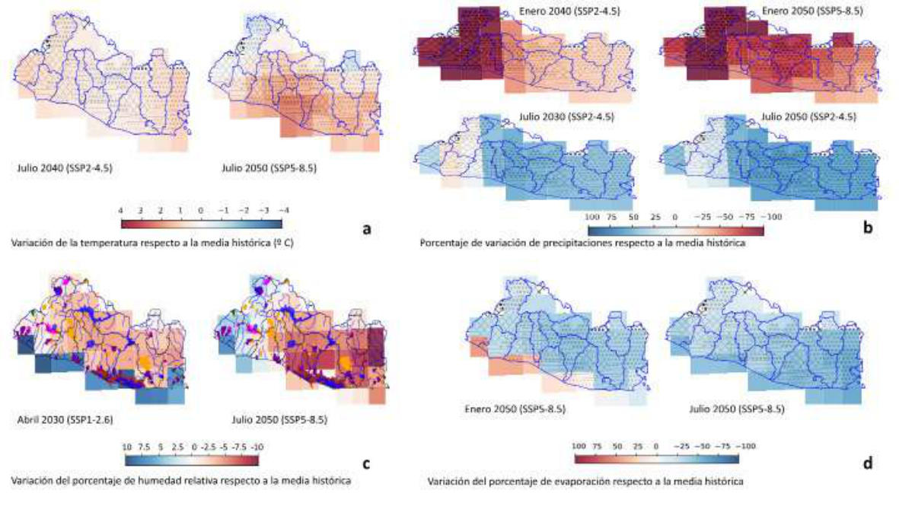
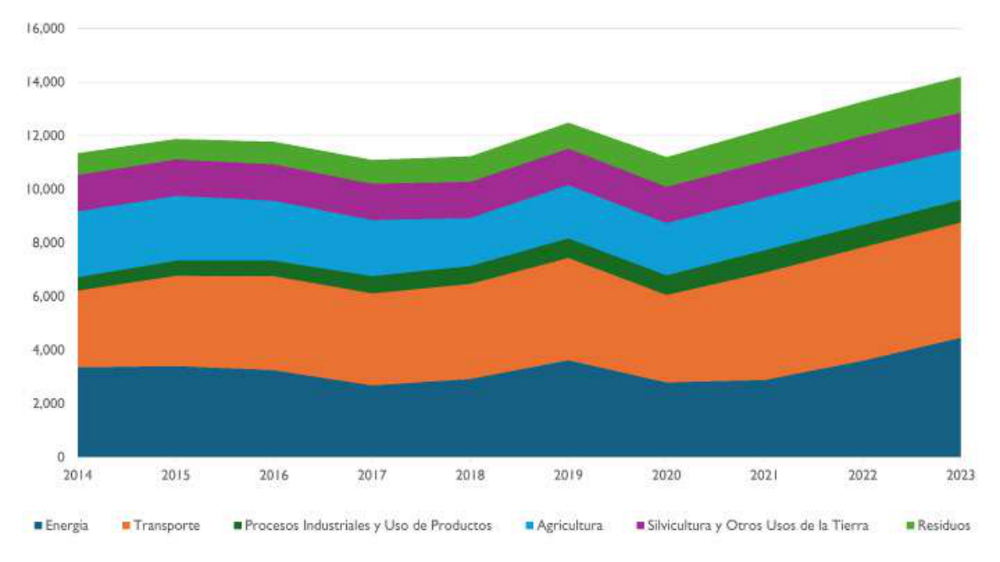
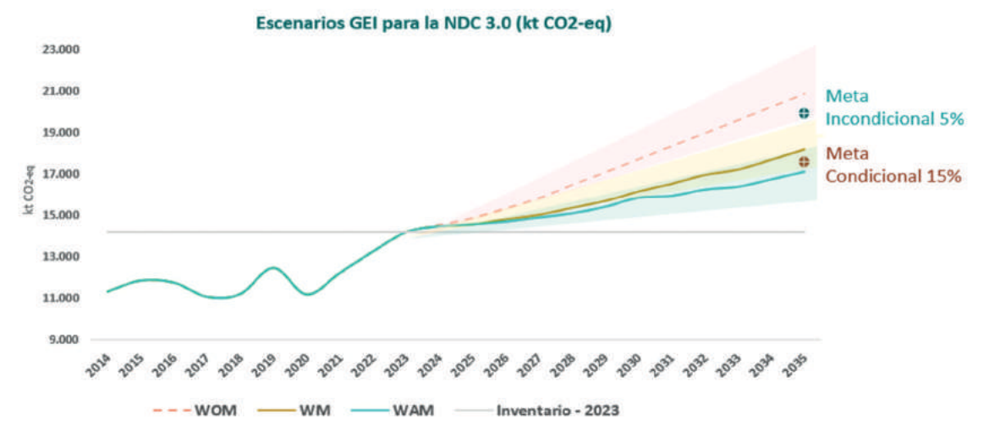
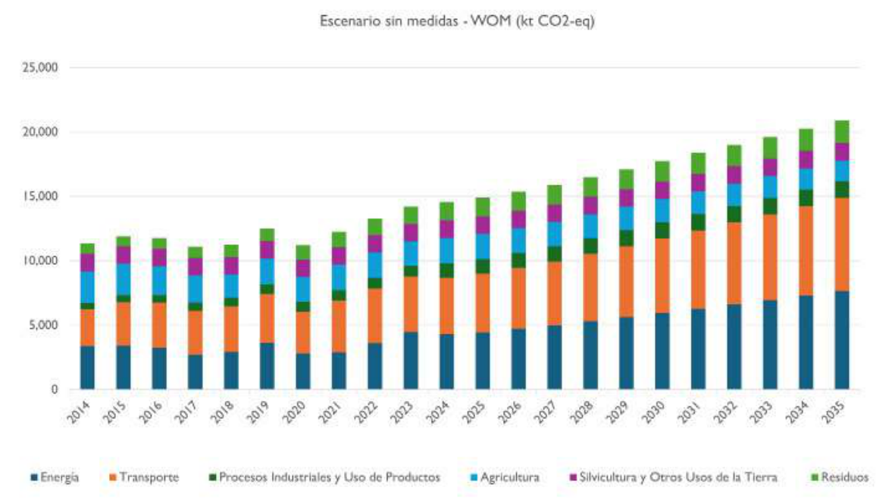
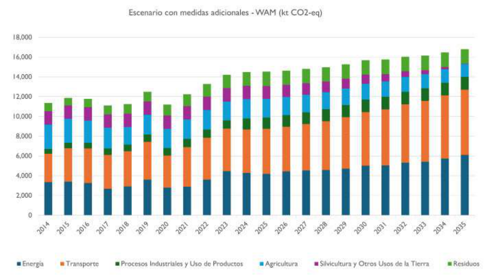
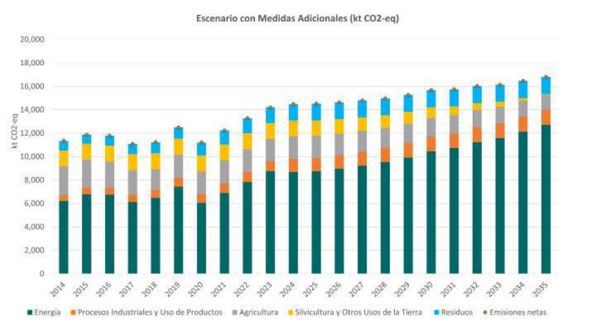

NDC El Salvador 2025
Nationally Determined Contributions of El Salvador, 2025
Nayib Armando Bukele Ortez
President of the Republic of El Salvador
Félix Augusto Antonio Ulloa Garay Vice President of the Republic of El Salvador
Fernando Andrés López Larreynaga Minister of Environment and Natural Resources
Acknowledgements to the institutions that participated in the preparation of the NDC El Salvador 2025:
National Administration of Aqueducts and Sewers (ANDA), National Solid Waste Authority (ANDRES), Salvadoran Water Authority (ASA), Central Reserve Bank of El Salvador (BCR), National Center for Agricultural and Forestry Technology (CENTA), Lempa River Hydroelectric Executive Commission (CEL), Salvadoran Sugar Agroindustry Council (CONSAA) Fire Department of El Salvador, Office of the First Lady of the Republic, Presidency of the Republic, General Directorate of Energy, Hydrocarbons and Mines (DGEHM), General Directorate of Civil Protection (DGPC), National Directorate of Municipal Works (DOM), National School of Agriculture (ENA), National Institute of Health (INS), Salvadoran Institute of Agrarian Transformation (ISTA), Salvadoran Coffee Institute (ISC), Environmental Health and Toxicology Research Laboratory, Ministry of Environment and Natural Resources (MARN), Ministry of Health (MINSAL), Ministry of Agriculture and Livestock (MAG), Ministry of Economy (MINEC), Ministry of Education, Science and Technology (MINEDUCYT), Ministry of Governance and Development (MIGOBDT), Ministry of Finance, Ministry of Public Works and Transport (MOPT), Ministry of Foreign Affairs (MRREE), Ministry of Tourism (MITUR), Ministry of Housing (MIVI), Vice Ministry of Transport (VMT), Planning Office of the San Salvador Metropolitan Area (OPAMSS), Secretariat of Commerce and Investment, Superintendency of the Financial System (SSF), academia, social organizations, trade associations, the private sector and cooperation partners.
Design and layout: UNDP
The design, editing, layout and reproduction of this document were financed by the Embassy of Sweden, through the Swedish International Development Cooperation Agency (SIDA). This document does not reflect or commit the point of view of our partners.
All rights reserved. Not for sale.
This document may be reproduced in whole or in part for educational or non-commercial purposes, provided the copyright is acknowledged.
The preparation of this publication received technical and financial support from:
This document was prepared with the support of UNDP's Climate Promise Initiative, through the Pledge to Impact programme, which benefits from the generous contributions of the governments of Germany, Japan, the United Kingdom, Sweden, Belgium, Spain, Iceland, the Netherlands, Portugal and other UNDP core funding partners. This programme underpins UNDP's contribution to the NDC Partnership.
With support from the »Support Project for the Implementation of the Paris Agreement (SPA)«, implemented by the Gesellschaft für Internationale Zusammenarbeit (GIZ) and financed by the International Climate Initiative (IKI) of the Federal Government of Germany.
|
Acronym / Abbreviation |
Description |
|
AbE |
Ecosystem-based Adaptation |
|
ADESCOS |
Community Development Associations |
|
AFOLU |
Agriculture, Forestry and Other Land Use |
|
AF |
Adaptation Fund |
|
AMSS |
San Salvador Metropolitan Area |
|
ANDA |
National Administration of Aqueducts and Sewers |
|
ANDRES |
National Solid Waste Authority/ National Waste Authority |
|
AR5 |
IPCC Fifth Assessment Report |
|
ASA |
Salvadoran Water Authority |
|
BANDESAL |
Development Bank of El Salvador |
|
BaU |
Business as Usual (equivalent to WOM in the MPGs) |
|
BCIE |
Central American Bank for Economic Integration |
|
BCR |
Central Reserve Bank (of El Salvador) |
|
BID |
Inter-American Development Bank |
|
BM |
World Bank |
|
BTR |
Biennial Transparency Report |
|
CAF |
Development Bank of Latin America and the Caribbean |
|
CCM |
Control and Monitoring Center |
|
CEL |
Lempa River Hydroelectric Executive Commission |
|
CENTA |
National Center for Agricultural and Forestry Technology |
|
CMA |
Conference of the Parties serving as the meeting of the Parties to the Paris Agreement |
|
CMNUCC |
United Nations Framework Convention on Climate Change |
|
COAMSS |
Council of Mayors of the San Salvador Metropolitan Area |
|
COTENA |
National AFOLU Technical Commission |
|
DEC |
Directorate of Evaluation and Compliance |
|
DGEHM |
General Directorate of Energy, Hydrocarbons and Mines |
|
DGME |
General Directorate of Migration and Immigration |
|
DOM |
National Directorate of Municipal Works |
|
DOT |
Directorate of Land Use Planning |
|
ED2050 |
Long-Term Low-Carbon and Climate-Resilient Development Strategy 2050 |
|
EMEP/EEA |
European Monitoring and Evaluation Programme /European Environment Agency |
|
ENTE-ETESAL |
Transmission Company of El Salvador |
|
FIAES |
Environmental Investment Fund of El Salvador |
|
FOD |
First Order Decay (IPCC waste decomposition model) |
|
FONAT |
Fund for the Care of Traffic Accident Victims |
|
FOVIAL |
Road Conservation Fund |
|
FRL/NRF |
Forest Reference Level (REDD+) |
|
GCF |
Green Climate Fund |
|
GEF |
Global Environment Facility |
|
GEI |
Greenhouse Gases |
|
GST |
Global Stocktake (Global Stocktake) |
|
ICTU |
Information Necessary for Clarity, Transparency and Understanding |
|
IDH |
Human Development Index |
|
INE |
Energy Investments |
|
INGEI |
National Greenhouse Gas Inventory |
|
IPCC |
Intergovernmental Panel on Climate Change |
|
IPPU |
Industrial Processes and Product Use |
|
IRENA |
International Renewable Energy Agency |
|
ISTA |
Salvadoran Institute of Agrarian Transformation |
|
ISTU |
Salvadoran Tourism Institute |
|
ITMO |
Internationally Transferred Mitigation Outcomes |
|
KfW |
German Government-owned Development Bank |
|
LAGEO |
State-owned company responsible for generating geothermal energy |
|
LGRH |
General Water Resources Law |
|
LULUCF/UTCUTS |
Land Use, Land-Use Change and Forestry |
|
M&E |
Monitoring and Evaluation |
|
MAG |
Ministry of Agriculture and Livestock |
|
MARN |
Ministry of Environment and Natural Resources |
|
MFC |
Climate Finance Roundtable |
|
MIGOBDT |
Ministry of Governance and Territorial Development |
|
MINEC |
Ministry of Economy |
|
MINEDUCYT |
Ministry of Education, Science and Technology |
|
MINSAL |
Ministry of Health |
|
MITICA |
Mitigation-Inventory Tool for Integrated Climate Action |
|
MITUR |
Ministry of Tourism |
|
MIVI |
Ministry of Housing |
|
MOPT |
Ministry of Public Works and Transport |
|
MPGs |
Modalities, Procedures and Guidelines/Modalities, Procedures and Guidelines (of the Transparency Framework) |
|
MRREE |
Ministry of Foreign Affairs |
|
MRV |
Measurement, Reporting and Verification |
|
MTR |
Enhanced Transparency Framework |
|
NAMA |
Nationally Appropriate Mitigation Action |
|
NAP |
National Adaptation Plan (National Adaptation Plan) |
|
NDC |
Nationally Determined Contributions (Nationally Determined Contribution) |
|
OMM |
World Meteorological Organization |
|
ONEC |
National Office of Statistics and Censuses |
|
OPAMSS |
Planning Office of the San Salvador Metropolitan Area |
|
PAM(s) |
Policies, Actions and Measures |
|
PIB |
Gross Domestic Product |
|
PNCC |
National Climate Change Plan |
|
PNRRD |
National Disaster Risk Reduction Plan |
|
PREPP |
National Programme for the Restoration of Ecosystems and Productive Landscapes |
|
PTAR |
Wastewater Treatment Plant |
|
PyMES |
Small and medium-sized enterprises |
|
RCP |
Representative Concentration Pathways |
|
REDD+ |
Reducing Emissions from Deforestation and Forest Degradation |
|
RTS |
Salvadoran Technical Regulation |
|
RTV |
Vehicle Technical Inspection |
|
SARAS |
Environmental and Social Risk Management System |
|
SbN |
Nature-based Solutions |
|
SIGEMOV |
Centralized System for Mobility Management |
|
SIGET |
General Superintendency of Electricity and Telecommunications |
|
SIMAAC |
Integrated Environmental and Climate Change Information System |
|
SINAMA |
National Environmental Management System |
|
SIS |
Integrated Health Information System |
|
SSF |
Superintendency of the Financial System |
|
SUDS |
Sustainable Urban Drainage Systems |
|
UT |
Transactions Unit |
|
UTCUTS |
Land Use, Land-Use Change and Forestry |
|
VIGEPES |
Epidemiological Surveillance System |
|
VMT |
Vice Ministry of Transport |
|
WAM |
With Additional Measures (With additional measures) |
|
WM |
With Measures (With measures) |
|
WOM |
Without Measures (Without measures; BaU reference scenario) |
|
CH₄ |
Methane |
|
CO₂ |
Carbon dioxide |
|
HFC |
Hydrofluorocarbons |
|
HFO |
Hydrofluoroolefins |
|
N₂O |
Nitrous oxide |
|
NF₃ |
Nitrogen trifluoride |
|
PFC |
Perfluorocarbons |
|
SF₆ |
Sulphur hexafluoride |
The Government of the Republic of El Salvador, committed to its ethical responsibility to guarantee better living conditions for the population and to create an enabling environment for the country's development and economic growth, presents the Nationally Determined Contributions of El Salvador 2025 (NDC 2025). This instrument reaffirms national leadership in climate action and consolidates a strategic vision that integrates economic prosperity with environmental, climate and social resilience.
In compliance with Article 4, paragraph 9, of the Paris Agreement, to which El Salvador is a Party, the country voluntarily and sovereignly defines its contribution to the reduction of Greenhouse Gas (GEI) emissions, through a national target that calls on all economic sectors to contribute in accordance with their capacities, strengthening coherence between mitigation and development policies. It also directs climate action towards protecting the country's human, natural and territorial wealth —an invaluable heritage that faces differentiated challenges in the face of climate variability— and positions increasing resilience to climate risks as a national priority, through multisectoral approaches for the protection of the population.
The NDC of El Salvador 2025 rigorously integrate the advances of climate science, incorporating analyses of the impacts derived from climate variability under different socioeconomic pathways, as well as projections of GEI emissions under the implementation of high-impact policies, measures and actions. The document recognizes the mitigation co-benefits derived from adaptation actions; establishes a national adaptation goal with clear sectoral priorities and incorporates cross-cutting approaches on loss and damage, and risk management, human mobility, education, tourism and nutrition. In addition, it defines the necessary means of implementation in terms of finance, capacity-building and technology transfer.
El Salvador's commitment in the NDC 2025 is based on guiding principles that steer national climate action: resilience as a priority of the State, methodological rigour and transparency; common but differentiated responsibility; people-centred adaptation, inter-institutional coordination and strategic climate finance. These principles enable the country to act with a long-term vision, institutional coherence and responsibility in view of the need to safeguard the integrity of the population against the adverse effects of climate, while contributing —in accordance with its national capacities— to the global goal established in the Paris Agreement.
El Salvador thus reaffirms its development path, aimed at guaranteeing a dignified life for the entire population, strengthening the country's resilience and consolidating a safer, fairer and more prosperous future.
El Salvador reaffirms its commitment to global climate action and to building a sustainable development model based on efficiency, innovation and resilience. Through the update of the Nationally Determined Contributions of El Salvador (2025), the country consolidates a vision of a modern State that drives productive, energy and territorial transformation, decisively strengthening the protection of natural resources and the well-being of the population.
The Government of El Salvador, with the technical support of key partners, leads this strategic process, which represents a decisive step towards a sustainable and competitive economy.
This update establishes a national target for the reduction of Greenhouse Gas (GEI) emissions, which allows all economic sectors to contribute to this reduction, according to their capacity. It estimates the mitigation co-benefits of adaptation actions; defines a methodology for estimating emission reduction scenarios; integrates a national adaptation priority and defines sectoral priorities, incorporating loss and damage in a cross-cutting manner, climate risk management, tourism, human mobility, education and nutrition. In addition, it determines the means of implementation in terms of finance, capacities and technologies that will enable implementation.
In the area of mitigation, El Salvador reaffirms its commitment to reducing GEI emissions in line with its vision of sustainable development and low level of total emissions. The country is driving the gradual transformation of key sectors such as energy, transport and land use towards low-carbon pathways. The NDC 2025 establish a clear, quantifiable and strengthened mitigation target, together with a strategic projection to 2035, both aligned with the Long-Term Development Strategy. El Salvador will implement these actions through the efficient use of national resources, the attraction of private investment and international cooperation, guaranteeing transparency and accountability, thus consolidating its leadership in climate action.
In terms of adaptation, El Salvador will consolidate a new cycle of climate action that strengthens adaptive capacity and promotes the country's sustainable development. In order to reduce vulnerability to climate risks and minimize their impacts, the country prioritizes the strengthening of national climate planning systems, early warning systems, risk management; the restoration of ecosystems and the productive landscape, adopting a multisectoral approach with national scope.
The proposed measures are structured around three strategic pillars that guide the national climate agenda:
The Nationally Determined Contributions of El Salvador (2025) express, in essence, a national commitment to build a resilient and prosperous country, where sustainability drives economic growth and the well-being of its population, as well as a commitment to contribute to the global effort to address climate change.
El Salvador, located on the Central American isthmus and with a surface area of 21,040.79 km², borders Honduras, Guatemala and the Pacific Ocean. Its territory comprises three geographic regions that are critical for climate risk management: coastal zones, the eastern region/dry corridor, and mountainous areas of the central plateau. These zones face recurring climate hazards such as droughts, floods, tropical cyclones and coastal erosion, whose intensity is aggravated by socioeconomic conditions and pressure on natural resources.
In 2024, nominal Gross Domestic Product (GDP) amounted to 35,364 million dollars and real GDP grew by 2.6 % compared with the previous year (BCR, 2024). The economy maintains moderate dynamism, with favourable prospects for growth above historical averages (FMI, 2023), accompanied by a reduction in unemployment, greater labour force participation and a sustained decrease in inequality (BCR, 2021).
The country has a Human Development Index (HDI) of 0.68 in 2023. Inequality has been reduced, with a Gini Index of 0.387 in 2023; multidimensional poverty is estimated at 24 % of the population, with higher incidence in rural areas (41 %) (PNUD, 2024; CEPAL, 2024).
According to the 2024 Census, El Salvador has 6.02 million inhabitants, of whom 52.8 % are women and 47.2 % men, making it the most densely populated country in the Americas with more than 310 inhabitants per km². 71.4 % live in urban areas, especially in the San Salvador Metropolitan Area (AMSS), where density can exceed 16,000 inhabitants per km². In addition, 1.2 % of the population identifies as belonging to Indigenous Peoples, mainly Nahuat Pipil, Lenca and Kakawira.
Since 2021, the country has experienced a significant strengthening of public security, reflected in historic reductions in homicide, crime and gang violence rates. This progress has contributed to improving the well-being of the population and to creating an environment favourable to economic growth.
Levels of access to public services have improved in recent years, although gaps persist. At the national level, 97.7 % of households have electricity; 85.6 % have drinking water; 96.9 % have sanitation services; and 57.6 % have solid waste collection (BCR, 2025).
Environmental conservation is a national priority, evidenced by the protection of 210 natural protected areas and 126 wetlands essential for biodiversity and water regulation. Forests cover 33.9 % of the territory and agriculture occupies more than 40 % of the land (MARN, 2024; MAG, 2024).
El Salvador contributes only 0.04 % of global GHG emissions; and according to the Sectoral Climate Vulnerability Assessment (Gauss, 2025a), its structural vulnerability to climate change and variability is high (MARN, 2025). In recent decades, events such as hurricanes Stan (2005) and Ida (2009), storms Agatha (2010), Amanda and Cristóbal (2020), as well as prolonged droughts (2012–2016) and the record 60-day drought in 2015, have caused significant human and economic losses. This has persistently placed the country among the top 20 positions of the Global Climate Risk Index between 2000 and 2019, ranking 29th out of 181 (Germanwatch, 2021).
Territorial analysis shows that 88.7 % of the territory is exposed to disaster risks. Departments such as Cabañas, Morazán and Ahuachapán present high vulnerability due to the combination of socioeconomic factors, limitations in access to basic services, and environmental stress. This territorial distribution of vulnerability underscores the need for differentiated and equitable actions to strengthen the country's resilience.
El Salvador faces high climate vulnerability arising from its location in the Central American tropical belt, its marked seasonality and the exposure of most of its territory to climate hazards. Regionalized climate scenarios from CMIP5 and CMIP6 under SSP1-2.6, SSP2-4.5 and SSP5-8.5 project a generalized increase in temperature, with greater increases in the coastal zone; variation in the intensity and duration of rainfall; a decrease in relative humidity; and variations in soil evaporation, which will increase in coastal areas (Gauss, 2025a), as shown in Figure 1.
Taken together, these trends deepen the country's historical climate risk and reinforce the need for adaptive responses in key sectors. Regarding sectoral impacts, the following can be mentioned:

The agriculture sector presents high sensitivity due to dependence on rainfed agriculture, soil degradation and the concentration of production in exposed zones such as the central, central-east and north-west zones, the eastern Dry Corridor and coastal areas. Losses are projected in the basic grains, sugarcane, livestock and coffee subsectors due to water stress, pests, diseases and damage from extreme rainfall; together with decreases in fisheries and aquaculture productivity associated with rising water temperatures, invasive species and coral bleaching.
In water resources, the combination of lower precipitation during the dry season and higher temperatures will generate: i) reductions in streamflows and prolonged droughts, ii) impacts on aquifer recharge, and iii) intensification of evaporation in reservoirs such as Cerrón Grande and in the middle-lower course of the Lempa River. The increase in extreme rainfall in wet seasons will cause floods and overflows; these impacts compromise supply for human consumption, irrigation and hydroelectric generation, while lower aquifer recharge and sediment transport increase water treatment costs and contamination risks (ANDA, 2017).
In health, the increase in heat waves and the expansion of vectors will increase heat-related illnesses (heat stroke and dehydration), respiratory, cardiovascular and mosquito-borne diseases (dengue, chikungunya, zika and malaria), while torrential rains will raise the risks of injuries, diseases from consumption of contaminated water and psychological effects, especially in dense urban populations such as the San Salvador Metropolitan Area (AMSS) and in vulnerable groups.
Infrastructure also presents significant exposure: more intense heat waves will exacerbate the load on energy and water systems due to greater demand for cooling; while extreme rainfall will cause floods and landslides affecting dense urban areas, and coastal territories will face storm surges, erosion and saline intrusion that impact critical infrastructure.
In the energy sector there will be greater electricity demand for artificial climate control of infrastructure due to increased heat, and the reduction in streamflows will affect generation at the hydroelectric plants on the Lempa River, increasing dependence on thermal sources.
El Salvador is promoting significant efforts to manage the climate risk of its infrastructure. Preliminary studies such as the Climate Risk Study of Electricity Infrastructure, developed by the International Renewable Energy Agency (IRENA) as technical support to the General Directorate of Energy, Hydrocarbons and Mines (DGEHM), estimate that under the SSP2-4.5 scenario of the Intergovernmental Panel on Climate Change (IPCC), exposure to climate hazards will increase in the coming decades. It has been identified that assets under high flood threat would rise from 14 % (2015–2044) to 39 % (2041–2070) and 55 % (2071–2100); exposure to droughts would rise from 15 % to 25–29 % towards the end of the century; while heat waves, initially insignificant, could affect up to 31% of electricity assets in the period 2071–2100. These results highlight the growing climate threats to electricity generation, transmission and distribution, and underscore the need to integrate resilience and adaptation measures into future investments in the sector.
Biodiversity faces profound transformations due to rising temperatures and water stress, which will cause species displacement, habitat fragmentation, greater risk of forest fires; impacts on montane and dry forests, soil degradation and loss of genetic diversity. Coastal ecosystems such as mangroves and reefs will deteriorate due to rising water temperatures and sea level rise, reducing essential ecosystem services.
Nutrition: greater risk of malnutrition and reduced access to food due to recurrent agricultural losses, especially affecting households in the Dry Corridor and vulnerable groups such as early childhood, children, and pregnant and breastfeeding women.
Education: interruptions in educational continuity due to damage to infrastructure, climate emergencies and loss of livelihoods, aggravating dropout; impacts on the physical and mental well-being of students and teachers due to heat; forced displacement and territorial gaps between urban and rural areas.
Human mobility: increase in internal displacement and irregular, environmental and climate migration due to deterioration of livelihoods and extreme events, generating additional pressure on urban areas and increasing the social vulnerability of rural communities.
Tourism: economic and social impacts from coastal erosion, loss of beaches, damage to tourism infrastructure and deterioration of key ecosystems, significantly impacting micro and small enterprises that depend on these activities.
Taken together, this profile shows that the country's vulnerability is multidimensional, territorially differentiated and sectorally interdependent.
Historically, El Salvador has generated low levels of GHG emissions, so its contribution is not significant. The development of an approximate National Greenhouse Gas Inventory 2014-2023 constituted an essential technical instrument to guide the construction of the mitigation scenarios of this NDC update.
This approximate version of the Inventory1 was prepared in accordance with the guidelines of the Intergovernmental Panel on Climate Change (IPCC, 2006), using available national sources. In energy, emissions were recalculated with information from the revised energy balances of the DGEHM; in waste, the series were updated with population and quantities deposited in landfills; in industrial processes, emissions from cement production were estimated with updated clinker data; and in refrigeration and air conditioning, annual imports of hydrofluorocarbons (HFCs) were used.
For those categories without direct activity data, the splicing technique (splicing) of the 2006 IPCC guidelines was applied, using relevant socioeconomic variables from the BCR database2. The estimates use the global warming potentials from the IPCC Fifth Assessment Report (AR5), and special care has been taken to ensure the consistency of the time series, a key requirement
The approximate Inventory 2014-2023 shows that the main emitter is road transportation (1A3b), which grows almost steadily from 2,856 to 4,301 kt CO₂eq, with a drop in 2020 and a subsequent rebound.
Manufacturing industries and construction (1A2) also increase strongly, from 838 to 1,894 kt CO₂eq. Energy industries (1A1) show high variability associated with electricity dispatch and hydrology, with a decline in 2017–2018 and a recovery to 1,567 kt CO₂eq in 2023.
In industrial processes, cement production (2A1) remains in the range of 421-477 kt CO₂eq, with a slight drop to 419 kt CO₂eq in 2023.
Refrigeration and air conditioning (2F1) exhibits a more marked upward trend, from 38 to 380 kt CO₂eq, reflecting the expansion of the stock of HFC equipment.
In agriculture, enteric fermentation (3A1) and manure management (3A2) show gradual declines over the decade, while in UTCUTS land use 3B remains constant at 1,359 kt CO₂eq net.
In waste, emissions from landfill disposal (4A) increase from 333 to 789 kt CO₂eq, and wastewater (4D) grows from 482 to 547 kt CO₂eq.
The national total goes from 11,349 to 14,208 kt CO₂eq, with a contraction in 2020 linked to the pandemic and accelerated growth in 2021–2023, driven by transport, manufacturing, greater fuel use in generation and the increase in HFC use; while the agricultural components partially offset the rise due to their downward trend. The results of the estimated time series are presented below in Figure 2.

Principle of Progressive Ambition. The country continuously raises its level of climate ambition, establishing economy-wide mitigation targets and clearly differentiating the unconditional and conditional components, in accordance with its capabilities and with the international support available.
Principle of Resilience as a National Priority. Adaptation and resilience are considered essential pillars of climate action. Strategic decisions must prioritize sectors such as water resources, agriculture, health, biodiversity and ecosystems; energy, transport, infrastructure and cities, solid waste and wastewater, and cross-cutting issues; in addition, they must incorporate measures to reduce loss and damage, avoid human displacement and anticipate risks arising from extreme climate events.
Principle of Methodological Rigour and Transparency. The planning and implementation of the NDC are based on scientific information, robust national inventories and integrated systems of Measurement, Reporting and Verification (MRV) and Monitoring and Evaluation (M&E) aligned with the Enhanced Transparency Framework (MTR). All action must guarantee traceability, methodological consistency and institutional strengthening.
Principle of Common but Differentiated Responsibility. The NDC is implemented recognizing the country's climate vulnerability, its low contribution to global emissions and the need to promote development that is just, resilient and consistent with national circumstances.
Principle of People-Centred Adaptation. Planning prioritizes strategic and cross-cutting adaptation areas, ensuring that climate decisions improve human well-being, protect livelihoods and place people at the centre of climate action.
Principle of Inter-institutional Coordination. Climate action is underpinned by robust regulatory frameworks, competent institutions and articulated coordination mechanisms. Planning ensures participation, climate information management, intersectoral coordination and capacity building.
Principle of Strategic Climate Finance. Implementation of the NDC requires national capacity to identify, manage and mobilize climate finance. Resource mobilization must expand access to international funds, explore innovative mechanisms and ensure that resources are used consistently with national and international objectives and conditional climate commitments.
The NDC update is articulated with a broad framework of national policies, plans and programmes that guide the country's climate management. Notable among them are the National Environmental Policy (2022), the National Climate Change Plan 2022–2026, the proposed Long-Term Low-Carbon and Climate-Resilient Development Strategy 2050 (ED2050) and the National Adaptation Plan (under development), which -together with other instruments- form the strategic basis of the country's climate action, providing strategic guidelines and planning foundations that support the NDC.
At the sectoral level, planning progressively incorporates climate objectives through medium- and long-term instruments, including:
The regulatory framework guiding national climate management is based on the Environment Law, which establishes principles, policies and instruments for climate action and recognizes climate change as a national priority. Based on this law and its 2012 reform, the Government of El Salvador has developed policies, strategies and plans under a cross-cutting and intersectoral approach. Among the guiding instruments, the National Environmental Policy (2022) and the National Climate Change Plan (PNCC) 2022–2026 stand out.
Various institutions and sectors, including central Government entities, municipalities, associations of municipalities, regional planning offices, waste managers and private organizations are involved in the PNCC 2022-2026. National institutions have direct compliance and reporting responsibilities, consolidating a robust framework for climate action (MARN, 2022; 2025).
At the strategic level, the country has the proposed ED2050, which guides the transition towards low-emission and resilient development and serves as a reference framework for the NDC update. It is also advancing in the formulation of the National Adaptation Plan (NAP), strengthening inter-institutional and territorial coordination for adaptation.
The Ministry of Environment and Natural Resources (MARN) is the governing entity for environmental and climate management. Its mandate in mitigation is established by Legislative Decree No. 233 (1998) and in adaptation by Legislative Decree No. 158 (2012). The Technical Unit of the Minister's Office coordinates the climate agenda through the following key coordination spaces:
MARN also leads key instruments for climate management:
Taken together, these arrangements form a solid and articulated climate governance architecture, which makes it possible to formulate, implement, finance and report on the country's climate commitments with transparency, reinforcing its commitment to the Paris Agreement and sustainable development.
The process of updating El Salvador's NDC was carried out in a technical and participatory manner, aligned with international standards and consistent with national circumstances, in a multisectoral way, involving public institutions, academia, the private sector, civil society and international cooperation, and supported by strategic instruments in force and under development, such as the ED2050, consolidating a coherent, inclusive and results-oriented NDC.
It started from a comprehensive assessment of the 2021 NDC, which identified progress, challenges and lessons learned, complemented by the definition of national programmes with high climate impact to guide priority interventions.
An approximate update of the INGEI (2014–2023) was carried out and WOM, WM and WAM Scenarios were developed, providing a solid scientific basis for a realistic and ambitious mitigation target. In adaptation, the vulnerability assessment was prepared, and the national priority and the sectoral adaptation priorities and objectives were defined.
The process incorporated cross-cutting priorities such as loss and damage and risk management, tourism, education, nutrition and human mobility.
In addition, needs and gaps in finance, technology and capacity were identified, ensuring the means of implementation for mitigation and adaptation.
Coordination with the Inter-institutional Technical Committee and the Climate Finance Roundtable made it possible to gather sectoral priorities to strengthen resource mobilisation.
El Salvador, in its 2025 NDC, has established clear and differentiated commitments for the reduction of GEI emissions with a 2035 horizon, moving from several sectoral targets in the 2021 NDC to a single national target in 2025. These commitments reflect the country's determination to advance towards a low-carbon economy, aligning national development with global climate action objectives.
Unconditionally, El Salvador commits to achieving a 5% reduction in its GEI emissions compared to the Without Measures scenario (WOM) by 2035. This target represents the country's own effort, implementing actions and policies that do not depend on external support, and responds to the need to contribute responsibly to the global climate challenge.
Additionally, a conditional target of a 15 % reduction in GEI emissions by 2035 compared to the Without Measures scenario (WOM) is set. Achievement of this target is subject to access to international finance, technology transfer and the strengthening of institutional capacities. These enabling factors are essential to increase the ambition of climate actions and ensure their sustainability and effectiveness in the long term.
The differentiation between the unconditional target and the conditional target allows El Salvador to advance in a realistic and strategic manner, combining national efforts and international cooperation to strengthen its resilience and capacity to respond to the challenges of climate change, in accordance with the provisions of Article 4 of the Paris Agreement.
The target set out in this NDC update has been defined with criteria of prudence and feasibility, in line with the most recent information and national priorities, promoting compatibility between economic development and climate action. The target will be tracked through the INGEI, reported in the Biennial Transparency Reports (BTR), and through periodic review of the Without Measures scenario (WOM), which will make it possible to maintain methodological consistency and ensure transparency in the monitoring process.

|
Scenario |
2035 (kt CO₂eq) |
Uncertainty approximation |
|
|
% |
kt CO₂eq |
||
|
WOM |
21,096 |
±8 % |
±1.688 |
|
WM |
18,027 |
±10 % |
±1.803 |
|
WAM |
16,469 |
±12 % |
±1.976 |
The projections used for El Salvador's NDC 3.0 are based on the approximate National GHG Inventory3 2014-2023 and on the systematic assessment of policies, actions and measures prioritised by each sector. The methodology applies the 2006 IPCC Guidelines, their 2019 Refinement and the Modalities, Procedures and Guidelines (MPGs) of the Enhanced Transparency Framework (Decision 18/CMA.1), ensuring consistency, traceability and transparency throughout the process.
To model the evolution of emissions, taking into account expected economic and population growth, a macroeconomic framework was prepared describing the expected dynamics of the Salvadoran economy and of the sectors that directly affect emissions. This framework uses the official BCR projections of GDP (2024–2030) and national population (2023–2050) as the basis for defining the future sectoral structure.
|
- Models specified for national sources and sinks, based on the INGEI and the 2006 IPCC methodologies. - Consistency between inventory, projections and PAMs (Policies, Actions and Measures). MITICA and EMEP/EEA 2023 methodological approach to estimate PAMs and integrate impacts into mitigation scenarios. - Definition of scenarios in line with the MPGs: WOM, WM and WAM, for all IPCC sectors and gases (CO2, CH4, N2O, HFC – PFC and NF3 emissions do not occur in the country). |
The structural transformation of the economy, with a smaller share of the primary and secondary sectors and sustained growth of the tertiary sector, raises the need to adapt projection methodologies and strengthen the availability of sectoral data. In this context, the MITICA model and the EMEP/EEA 2023 Guidebook, adjusted to the national context, were used to build sectoral models and develop the With Measures (WM) and With Additional Measures (WAM) Scenarios.
The ex ante approach adopted makes it possible to estimate mitigation impacts before the effective implementation of the measures, anticipating benefits and guiding the prioritisation of strategic actions. In sectors with concrete progress, such as the expansion of renewable energy capacity, actual statistical data were integrated to reinforce the accuracy of the WM Scenario.
Each scenario incorporates an uncertainty analysis that makes it possible to identify ranges of results and adjust the reduction targets according to the robustness of the information. This process, led by MARN and developed together with sectoral stakeholders, combines technical rigour and flexibility to update the targets as information systems, institutional capacities and the adoption of new technologies are strengthened. The stages for developing the GEI emission scenarios are detailed below.
|
1. Estimation of an approximate reference inventory Taking 2014 as the reference year (the last GEI inventory submitted by the country to the UNFCCC), the 2014 to 2023 series is created in order to project emissions from a solid base using national statistics. |
|
2. Definition of a prospective macroeconomic framework Which establishes the reference socio-economic structure for the emission projections. |
|
3. Modelling of a without measures scenario Illustrates the country's emissions without considering the impact of PAMs. In accordance with the MPGs, this scenario is called WOM and is analogous to the Business as Usual scenarios used to define mitigation targets. |
|
4. Definition of Policies, Actions and Measures (PAMs) to be considered in the mitigation scenarios. They represent interventions that affect the evolution of emissions. They are derived from national and sectoral policies, programmes and measures, grouping effects, avoiding overlaps and delimiting effective interventions for emission reduction. |
|
5. Modelling of with measures scenarios, sensitivity analysis and design of mitigation targets. Starting from the without measures scenario, the WM and WAM scenarios are estimated, following the definitions of the MPGs. The exercise includes a sensitivity analysis that provides uncertainty ranges associated with the results of each scenario. |
|
6. Consultation process. For the implementation of all stages, a consultation process was carried out with national stakeholders, including relevant ministries, agencies and institutions, from the start of the formulation of the NDC. |
In the WOM (BaU) Scenario, total emissions increase from 14,208 kt CO₂eq in 2023 to a projected 21,096 kt CO₂eq in 2035, representing an increase of approximately 48 %. This increase is mainly associated with the energy and transport sector. The projection indicates that, in the absence of new measures, economic growth entails greater demand for energy and mobility. This simultaneously raises emissions from industry and waste management, offset only in part by progressive reductions in agricultural emissions.
Figure 5 presents the results obtained for the WOM Scenario by emitting category, considering the maximum level of disaggregation of the inventory, which facilitates the identification of critical intervention points and the assessment of opportunities for improvement in climate policies.

The With Measures scenarios WM (which serves as the reference for the unconditional target) and WAM (which constitutes the basis for the conditional target) are characterised by the inclusion of PAMs, which makes it possible to modify, in a clear and identifiable manner, the estimates made in the WOM (without measures) Scenario, at the level of both emission sources and sinks.
|
PAMs are the mitigation measures designed for the mitigation scenarios. PAMs are motivated by one or more legal or strategic documents of the country, and represent the impact of an intervention on a given emission source. The criteria established to define a PAM: -It affects one or more emission sources or sinks estimated in the national inventory and in the WOM Scenario. - It modifies the activity variable or the emission factor used in a direct and measurable way. - The impact of the PAM cannot already be included in another PAM (avoiding overlap). |
In the WM Scenario, total emissions increase from 14,208 kt CO₂eq in 2023 to 18,027 kt CO₂eq in 2035, remaining notably below those projected for the WOM Scenario in 2035. The main variation is observed in the energy industries (1A1), whose growth is moderated by the incorporation of more sustainable generation sources. For its part, the road transport sector (1A3b) shows a continuous increase, although with a less pronounced trend compared to the WOM Scenario.

In the WAM Scenario, total emissions increase from 14,208 kt CO₂eq in 2023 to 16,469 kt CO₂eq in 2035, remaining below the values recorded in WM and significantly lower than WOM. The main difference is observed in UTCUTS (3B), where net emissions decrease steadily as a result of initiatives aimed at conservation, restoration and reforestation. On the other hand, the electricity industry (1A1) shows an additional reduction compared to the WM Scenario, attributable to the greater share of clean generation, while road transport (1A3b) experiences a continuous increase, although moderate compared to other scenarios.

In summary, WAM shows a difference of 4,624 kt CO₂eq relative to WOM and of 1,558 kt CO₂eq relative to WM in 2035, resulting mainly from the reorientation in category 3B, as well as from additional reductions implemented in the industrial energy sector.
In El Salvador's Nationally Determined Contributions (2025), the targets are expressed as percentage reductions relative to the Without Measures reference Scenario (WOM or BaU) for 2035. Under this approach, what matters is the relative change between scenarios (for example, between WM and WOM, or between WAM and WM).
In this methodology, common assumptions (such as economic growth or population) affect all scenarios equally, so the sensitivity is concentrated on the PAMs. This is consistent with the MPGs of the Paris Agreement, which establish that the only difference between scenarios must be the application of such measures, ensuring a transparent and consistent interpretation of the mitigation effort.
In line with the above, the sensitivity analysis of the NDC (2025) focused on the PAMs with the greatest influence on emission reductions, particularly in the energy sector (1A1) and the Land Use, Land-Use Change and Forestry (UTCUTS) sector.
Taken together, these exercises confirm that defining the national target as a percentage reduction relative to the BaU (WOM) Scenario makes it possible to maintain methodological consistency over time and facilitates updating the scenarios as better information and more accurate data become available.
The estimation of the uncertainty associated with the mitigation targets in the NDC (2025) incorporates the key factors affecting the variability of the results: quality of activity data, representativeness of emission factors, structure of the projection models and effectiveness in the implementation of policies and measures, with emphasis on the Land Use, Land-Use Change and Forestry (UTCUTS) sector, given its high sensitivity to changes in the area restored or conserved.
Based on the IPCC guidelines and national experience, plausible uncertainty margins were defined for each sector: energy (± 5–8 %), waste (± 8–12 %), IPPU (± 5–8 %), agriculture (± 6–10 %) and UTCUTS (± 20–30 %). These intervals are weighted according to the projected sectoral contribution to emissions in 2035 and are combined by quadrature sum, which prevents overestimation.
Since the WOM, WM and WAM Scenarios share macroeconomic and demographic assumptions, an aggregate margin of ± 10 % is established for absolute emissions (kt CO₂eq) and a reduced margin for the reduction percentages. This method seeks to ensure the transparency and reproducibility of the analysis, which will be updated as inputs related to land use, restoration and the national GEI Inventory improve.
The PAMs included in the NDC (2025) represent the main mechanism for achieving the mitigation objectives. Each PAM is linked to a specific category of the national GEI Inventory and contributes to the projected reduction of emissions by 2035, relative to the Without Measures scenario (WOM). The following section sets out, for the With Measures (WM) and With Additional Measures (WAM) Scenarios, the prioritised PAMs, the corresponding IPCC category and the estimated level of emission reduction relative to WOM.
It concentrates emissions associated with the use of fuels for electricity generation, corresponding to IPCC category 1A1. For this sector, the following PAMs are considered: expansion of national generation (WM Scenario) and additional actions (WAM Scenario), aimed at strengthening energy security through a diversified, low-carbon mix.
These measures are based on national instruments such as the Indicative Plan for the Expansion of National Generation and the Law on Tax Incentives for the Promotion of Renewable Energy.
The estimation approach is based on modelling electricity generation according to the evolution of national demand and installed capacity by type of technology.
|
PAM name |
Scenario |
IPCC category |
Reduction relative to WOM (kt CO₂eq) - 2035 |
Scope |
|
Expansion of national generation |
WM |
1A1 |
1,268 |
Expansion of renewable sources gradually replacing fossil fuels in electricity generation, achieving estimated reductions of 1.268 kt CO₂eq for the WM Scenario and 770 kt CO₂eq for the WAM Scenario. |
|
Additional expansion of national generation |
WAM |
1A1 |
770 |
|
|
Total |
2,038 |
Corresponding to IPCC category 1A3b, it represents one of the main sources of national emissions due to the use of fossil fuels in passenger and freight transport. Three PAMs are identified for this sector: modernisation of the vehicle fleet, improvement of freight transport efficiency and improvement of traffic flow, which together contribute to reducing emissions through the adoption of clean technologies, route optimisation and efficient traffic management.
These measures are based on the national regulatory framework, including the Law for the Promotion and Incentives for the Import and Use of Electric and Hybrid Means of Transport, the Law on Land Transport, Traffic and Road Safety; the Special Law on Road Freight Transport; the Framework Law for the Use and Promotion of the Bicycle; the General Regulation on Traffic and Road Safety and the Technical Regulation on Air Quality and Emissions Control.
The estimation approach is based on modelling the national vehicle fleet and its projected evolution, differentiating between vehicle types, fuels and uses (passenger or freight). The projections consider fleet growth, technology substitution, emission factors by fuel type and the efficiency improvements associated with the measures implemented. By 2035 -the transport sector PAMs- in a WM Scenario will reduce approximately 313 kt CO₂eq relative to the Without Measures scenario, and 618 kt CO₂eq considering the additionality of the WAM Scenario.
|
PAM name |
Scenario |
IPCC category |
Reduction relative to WOM (kt CO₂eq) - 2035 |
Scope |
|
Modernisation of the vehicle fleet |
WM |
1A3b |
195 |
Promotes the progressive replacement of public passenger transport units with more efficient, low-emission technologies. In addition, it incorporates strategic management to introduce new public passenger transport units and restructure public transport routes, in order to optimise the operation of the system. These actions reduce energy consumption per passenger-kilometre, increase average occupancy and reduce passenger transport emissions. |
|
Improvement of freight transport efficiency |
WAM |
1A3b |
305 |
Promotes the adoption of more efficient technologies and route optimisation through digital logistics management tools. |
|
Improvement of traffic flow |
WM |
1A3b |
118 |
Reduces fuel consumption and urban emissions by optimising vehicle flow through traffic management measures, modernisation of traffic lights and promotion of sustainable means of transport. Likewise, the Control and Monitoring Centre (CCM) is incorporated to strengthen traffic management through continuous monitoring and -real-time- coordination of public transport, freight transport and transport in general; reducing congestion and contributing to a more orderly and efficient vehicle flow. This action complements the improvements derived from the modernisation of the vehicle fleet, ensuring consistency and avoiding duplication of mitigation effects |
|
Total |
618 |
This covers emissions resulting from the energy consumption of equipment and from the use of fluorinated gases, particularly hydrofluorocarbons (HFC). For this sector, two PAMs are prioritised in the WM Scenario: improving energy efficiency in the residential sector and reducing HFC consumption. Both measures strengthen the transition towards clean and efficient technologies, reducing both direct emissions and those associated with electricity consumption.
HFC substances, in their pure state or in blends, contribute to the phenomenon known as the greenhouse effect, intensifying the impacts of climate change. For this reason, Executive Decree No. 10 of 2024 of the environment branch has been drawn up to fulfil the commitments undertaken, focused on reducing the consumption of HFC or their blends as detailed in the Kigali Amendment to the Montreal Protocol, for the period between 2024 and 2045. Also, Executive Decree No. 14 of 2024 of the environment branch establishes the maximum import limit in tonnes of carbon dioxide equivalent (tonnes of CO2eq) for substances with high global warming potentials of the HFC type, in order to contribute to climate change mitigation and to compliance with the obligations arising from the international instruments that the country has ratified in this area.
By 2035, a total reduction of 65.19 kt CO₂eq relative to the WOM Scenario is projected. The scope of the PAMs considered is described below.
|
PAM name |
Scenario |
IPCC category |
Reduction relative to WOM (kt CO₂eq) - 2035 |
Scope |
|
Improvement of energy efficiency in the residential sector |
WM |
1A1 |
2.64 |
The energy efficiency PAM promotes equipment with 15 % higher performance compared with older models, applied gradually in the residential and commercial sectors. |
|
Reduction of HFC consumption in refrigeration and air conditioning |
WM |
2F1 |
62.55 |
In accordance with the Kigali Amendment, El Salvador is advancing in the gradual reduction of HFC consumption, with targets of 10 % in 2029, 30 % in 2035, 50 % in 2040 and 80 % in 2045 relative to the baseline level. These reductions are modelled according to the import limits established in the national regulatory framework, reaffirming the country's commitment to climate mitigation and to the sustainable modernisation of the refrigeration and air conditioning sector. |
|
Total |
65.19 |
When energy efficiency in the residential sector is improved, the electricity consumption of end users is reduced. This reduced consumption is calculated using the emission factor of the WM scenario, which in turn is obtained by recreating the national electricity system under the Energy industries PAM. Thus, the effect of both measures is correctly reflected only in category 1A1, avoiding double counting.
In the scenarios developed, El Salvador considers that the sustainable livestock PAM acts on (IPCC) categories 3A and 3B as follows:
|
PAM name |
Scenario |
IPCC category |
Reduction relative to WOM (kt CO₂eq) - 2035 |
Scope |
|
Sustainable livestock (Enteric fermentation) |
WM |
3A |
320 |
Aimed at reducing emissions and increasing carbon removals through the adoption of technology and good practices in production systems. It will reduce approximately 626 kt CO₂eq by 2035, promoting low-carbon, more productive and resilient livestock farming that simultaneously contributes to climate change mitigation and adaptation in rural areas. |
|
Sustainable livestock (Carbon capture) |
WM |
3B |
306 |
|
|
Total |
626 |
The following PAMs are considered as mitigation co-benefits of actions under the adaptation priorities of the agriculture, biodiversity and ecosystems sectors. This includes emissions and removals associated with the conservation, restoration and expansion of forest cover. The prioritised PAMs, forest conservation and restoration and reforestation and increase of plant biomass, drive the increase in net CO₂ removals through the recovery of degraded ecosystems and the strengthening of the sustainable management of forest resources.
These measures are underpinned by the Programme for the Restoration of Ecosystems and Productive Landscapes, the Programme of Environmental Incentives and Disincentives and the National Biodiversity Strategy, which establish the national priorities for ecological restoration and ecosystem rehabilitation, the conservation of natural forests and the expansion of vegetation cover.
The methodological approach is based on the quantification of carbon restored and removed in accordance with the 2006 IPCC Guidelines for the UTCUTS sector. Together, the measures will make it possible to reduce close to 510 kt CO₂eq by 2035 in the WM Scenario.
|
PAM name |
Scenario |
IPCC category |
Reduction relative to WOM (kt CO₂eq) - 2035 |
Scope |
|
Forest conservation and restoration |
WM |
3B |
507 |
To estimate the impacts of these PAMs, assumptions were established regarding the total area to be restored and conserved between 2025 and 2040. The WM Scenario projects the restoration and conservation of 144,290 hectares by 2035, while the WAM Scenario expands the target to 275,000 hectares by 2040, considering the progressive expansion of ongoing programmes and projects. |
|
Additional PAM for forest conservation and restoration |
WAM |
3B |
483 |
|
|
Reforestation and increase of plant biomass |
WM |
3B |
3 |
The measure drives the increase in biomass and CO₂ removals through the planting and management of new forest areas, strengthening ecological restoration and environmental services. It is based on the actions of the Lempa River Hydroelectric Executive Commission (CEL), aimed at the conservation and management of forests in hydroelectric sub-basins. An increase of 30 % in the forest cover of these sub-basins is estimated, equivalent to some 190 additional hectares on top of the 627 hectares currently protected by the CEL. The estimates are developed using the MITICA methodology for afforestation and reforestation, option 2, ensuring consistency and transparency in the calculation of removals. |
|
Total |
993 |
The PAMs identified seek to reduce GEI emissions, mainly methane (CH₄), from solid waste management and wastewater treatment. Efficiency in disposal and treatment systems is promoted, driving the circular economy, waste recovery and the use of biogas. By 2035, a combined reduction of 286 kt CO₂eq relative to the WOM Scenario is projected, contributing to a more efficient, sustainable national management system aligned with the principles of the circular economy.
These actions are underpinned by a strong regulatory framework for solid waste management, as there is the National Circular Economy Policy, the Law on Integrated Waste Management and Promotion of Recycling (Legislative Decree No. 527, 2020) and its Regulations (Executive Decree No. 2-2023), as well as the Special Law on the Collection, Recovery and Final Disposal of Waste (2024), which creates the National Solid Waste Authority (ANDRES).
For its part, for the wastewater component, there is the National Environmental Policy; First National Environmental Sanitation Plan: Wastewater, Agreement No. 185; Salvadoran Technical Regulation: RTS 13.05.01:24 Wastewater. Wastewater Quality Parameters for Discharge and Management of Sewage Sludge, Decree No. 29; Special Regulation on Wastewater and Management of Sewage Sludge; Technical guidelines for the evaluation of activities, works or projects involving the management and reuse of sludge from wastewater treatment, and Technical guidelines for the evaluation of activities, works or projects involving the alternative of reuse of treated wastewater.
In the wastewater component, notable are the projects for the Design and Construction of Wastewater Treatment Plants (PTAR) in the Lempa river basins, led by the National Administration of Aqueducts and Sewers (ANDA), and on the Acelhuate river by the CEL and public entities, aimed at strengthening the treatment of wastewater from urban areas and reducing methane emissions from the sector.
|
PAM name |
Scenario |
IPCC category |
Reduction relative to WOM (kt CO₂eq) - 2035 |
Scope |
|
Improvement of national solid waste management |
WM |
4A |
171 |
The PAM drives the transition towards a circular economy through increased recycling, reuse and reduction of waste generation. A decrease of 30 % in the quantity of municipal waste disposed of in landfills by 2035 relative to the WOM Scenario is estimated, as a result of the expansion of composting programmes, energy recovery and per capita waste reduction. The estimates are based on the first order decay (FOD) model of the 2006 IPCC, adjusting the volume of waste deposited from 75 % in 2023 to 53 % in 2035. |
|
Improvement of national wastewater management |
WM |
4D |
115 |
This comprises the construction and operation of new PTAR to increase wastewater treatment coverage, as well as promoting the capture and use of methane in anaerobic treatment systems, and improving the operational efficiency of existing treatment systems. |
|
Total |
286 |
The Nationally Determined Contributions (2025) incorporate adaptation as a fundamental pillar for strengthening the country's resilience to climate variability and to the manifestations, effects and impacts of climate change; they use an approach that concentrates efforts and resources on priority territories and sectors such as rural and urban areas, as well as on the Dry Corridor and the coastal zone.
This strategic decision seeks to proactively protect vital sectors such as agriculture, food security and public health, and to guarantee the stability of livelihoods. Likewise, it prioritises the protection of critical infrastructure and energy security, ensuring the continuity and quality of essential services. Climate action represents an opportunity to strengthen integrated water resource management, conserve biodiversity, promote ecosystem services, the restoration of ecosystems and the productive landscape; and build safer, more resilient and prosperous territories and communities, taking into account the specific characteristics of each population.
The process of formulating the adaptation priorities followed a methodological development based on the potential behaviour of climate change in prioritised territories and sectors.
The steps followed were:
El Salvador starts from the recognition of the critical difference between the immediate impacts of extreme hydrometeorological events -which generate tangible losses and damages to infrastructure, production and the livelihoods of the population- and the gradual and cumulative effects of long-term, slow-onset climate trends, such as rising temperatures and variations in precipitation patterns, which progressively impact agricultural productivity, water availability, infrastructure and health, affecting sustainable development.
The country integrates a dual adaptation strategy that employs a comprehensive definition of adaptation. That is, one that considers both preventive adaptation, designed to prevent or reduce the effects of adverse climate events; and another oriented towards reactive adaptation, which seeks to return to the previous state in the shortest possible time after an extreme climate event, encompassing criteria such as resilience and disaster risk management in response protocols. This combination makes it possible to identify and prioritise more robust adaptation interventions, focused on reducing structural vulnerability and strengthening national resilience to the multiple dimensions of the climate crisis, especially in urban, peri-urban and rural areas.
El Salvador has defined a clear national priority: to increase resilience at the national level to climate risks, reducing impacts through the implementation of actions with a multisectoral and risk management approach, for the development and protection of the population.
This priority steers climate action towards the protection and strengthening of the country's human and territorial wealth, a unique heritage that faces differentiated challenges in the face of climate variability and change, and according to the differentiated roles and capacities of women and men. The population distribution, with a metropolitan dynamic concentrated in San Salvador and rural communities in close interaction with ecosystems, requires specific and contextualised adaptation responses for each territory.
Within this framework, El Salvador is promoting a resilience strategy with a territorial and differentiated approach (Indigenous population, men and women) that articulates actions to adapt urban, peri-urban and rural areas to the impacts of climate change, protect coastal zones against sea level rise, guarantee water security in the Dry Corridor and stabilise soils and watersheds in mountainous areas. These measures integrate national climate planning with local efforts, strengthening the adaptive capacity of production systems, ecosystems and communities.
The updated NDC are consolidated as a national roadmap for strengthening resilience and adaptive capacity in sectors key to national development.
Based on the analysis of historical impacts and possible future effects of climate change, and on a vulnerability diagnosis, the sectoral adaptation priorities and their strategic objectives for the period 2030–2035 have been defined, which also include priorities extending to 2040 in the agriculture sector, aimed at materialising these priorities and strengthening sectoral and territorial resilience; ensuring that climate action generates concrete and sustainable benefits for the population and ecosystems.
Priority: transition towards sustainable, adaptive and climate-resilient agriculture.
El Salvador is directing its climate action in the agricultural sector towards a profound transformation that guarantees productive sustainability and greater adaptive capacity and resilience to the manifestations, effects and impacts of climate change, promoting inclusion, sustainable production systems, restoration of ecosystem services, food security and better livelihoods for the population, linked in the National Agricultural Policy 2024-2029 to commitments to crop diversification and food security. The 2030-2035 strategic objectives are aligned with this vision, promoting sustainable, inclusive and resilient production systems that strengthen food security, preserve ecosystem services and improve rural livelihoods.
Priority: conservation of biodiversity and restoration of ecosystems and productive landscapes.
El Salvador is promoting a transformation in the management of its ecosystems in the face of growing climate vulnerability, with emphasis on montane forests, humid forests, mangroves and productive landscapes, where pressures arising from climate change, habitat fragmentation and land-use changes demand responses that are sustainable over time. Thus, the commitment is directed towards the establishment, management, restoration and conservation of biological corridors, based on the provisions of the National Strategy for the Management of Protected Natural Areas and Biological Corridor. In urban areas, the priority will drive the creation of urban green corridors and the promotion of native plant species with landscape qualities and ecosystem services.
The 2030-2035 strategic objectives are aimed at conserving and restoring ecosystems and agrobiodiversity through the promotion of comprehensive actions that strengthen ecological and community resilience. These actions require institutional backing that encompasses legal instruments or regulatory instruments, so that the proposed objectives are achieved. This approach seeks to protect the natural base of national development, improve the provision of essential ecosystem services such as water regulation, soil fertility and carbon capture, and contribute to the quality of life of the communities that depend directly on these ecosystems, who are guarantors of the care of biodiversity.
Priority: promote climate-resilient water management through integrated, sustainable and circular water management, as well as the conservation, decontamination and restoration of water bodies in priority basins.
Water vulnerability in El Salvador affects, in a cross-cutting manner, populations in urban and rural areas, as well as agricultural and livestock production sectors, with particular incidence in the northwestern zone of the country, where pressure on water resources is aggravated by climate variability, pollution and overexploitation.
In this context, the 2030-2035 strategic objectives are aimed at guaranteeing national water security through integrated, sustainable and circular management of the resource, promoting water-use efficiency, safe reuse, aquifer recharge and the strengthening of water and energy resilience. As well as through the implementation of water protection zone regimes, a key measure for conservation, recharge and climate risk reduction.
Likewise, priority is given to the implementation of comprehensive programmes for the decontamination, restoration and protection of water bodies under a river basin approach, promoting nature-based solutions and AbE. This comprehensive approach seeks to overcome the challenges arising from climate variability, ensure the availability and quality of water, and guarantee equitable access for all sectors of the population, contributing to the well-being and sustainable development of the country, which gives effect to the General Water Resources Law (LGRH).
Priority: integrated and resilient management of urban solid waste and use of wastewater and by-products with a circular economy approach.
In waste management, the challenges linked to the accumulation and washing away of waste and the proliferation of vectors are transformed into an opportunity to strengthen municipal integrated management programmes, incorporating circular economy and climate efficiency criteria; this under a perspective of synergistic work between the public sector and the private sector. These actions promote separation at source, the recovery of materials, recycling and environmental education, fostering the active participation of citizens in the transition towards sustainable consumption and production models.
In a complementary manner, the promotion of the circular water economy through the reuse of wastewater, biogas capture and the recovery of sludge makes it possible to reduce pressure on water resources and generate energy and economic benefits for local communities.
Within this framework, the 2030-2035 strategic objectives are aimed at consolidating municipal integrated solid waste management programmes, integrating clean and efficient technologies, and -in wastewater- strengthening the circularity of the by-products of its treatment, through the reuse of treated water and sewage sludge, as well as energy recovery, to guarantee a sector that is more resilient, sustainable and protective of human and environmental health.
Priority: strengthen the climate adaptation and resilience of the health system through its integration into health planning, the prevention of climate-sensitive diseases and the improvement of surveillance, response and care systems.
The health sector faces new challenges arising from the increase in the frequency and intensity of heat waves and other extreme climate events that directly affect the well-being of the population. These changes drive innovation in adaptation solutions, promoting the development of resilient infrastructure (with the potential to align with resilient infrastructure guidelines for cities) and prevention programmes aimed especially at protecting older adults, children and densely populated urban communities.
In this scenario, the country is moving forward with the formalisation and implementation of the National Plan for Public Health Adaptation and Resilience to Climate Change, strengthening the institutional and technical capacity of the Ministry of Health (MINSAL). This plan promotes the use of scientific evidence to design effective and sustainable communication systems that integrate the management of water resources and sanitation in vulnerable communities.
In line with these efforts, epidemiological surveillance of diseases related to air quality, water and sanitation due to the impact of climate change will be strengthened; this involves inter-institutional work for the management of waste and wastewater. To this end, the 2030-2035 strategic objectives represent an opportunity to consolidate the National Plan for Public Health Adaptation and Resilience to Climate Change, based on equity, innovation and sustainability, promoting the “One Health” approach, to ensure an effective, adaptive and anticipatory response to the impacts of climate change.
Priority: develop cities and urban settlements resilient to climate change through adaptive urban planning, updated technical regulations and the implementation of green and grey infrastructure, in order to reduce risks, strengthen the resilience of communities and optimise the functionality of urban environments in the face of extreme climate events.
Within this framework, the 2030-2035 strategic objectives focus on strengthening cities prepared for extreme climate events, through the integration of climate criteria into sustainable infrastructure, the promotion of clean mobility and the consolidation of adaptive urban planning. Likewise, the combination of green and grey infrastructure is promoted to reduce the risks of landslides and floods, while land-use planning instruments and technical regulations are updated.
This comprehensive approach turns climate challenges into drivers of urban innovation, contributing to building cities that are safer, healthier, more inclusive and resilient to climate variability and extreme climate events. One such example is the Metropolitan Plan, which takes into account the commitment to adaptation with sustainable construction such as Sustainable Urban Drainage Systems (SUDS) that provide benefits to the environment, in addition to commitments to strengthen green public spaces.
Priority: strengthen climate resilience in the energy sector, with a focus on climate risk management, energy security and nature-based solutions.
In the face of climate risks that threaten energy infrastructure and security of supply, the 2030-2035 strategic objectives of this priority represent an opportunity to strengthen the sector with a comprehensive approach through the generation of baseline climate risk information essential for sustainable energy planning, the strengthening of energy security, the restoration of strategic ecosystems and the zoning of available land for the implementation of photovoltaic projects.
In this way, the energy sector transforms climate challenges into drivers of innovation and resilience. This reaffirms the national commitment to a diversified, secure and climate-smart energy transition; in addition, it focuses on strengthening the resilience of energy infrastructure and the integration of ecosystems, forests or lakes that improve the response of the territory, function as sinks and strengthen conservation strategies.
Priority: promote a modern, safe and efficient public transport system through the implementation of advanced technologies for traffic management and the public passenger transport vehicle fleet, the promotion of active mobility and comprehensive traffic management and road safety actions, with the aim of improving service quality, reducing risks and fostering sustainable mobility.
The 2030-2035 strategic objectives direct their efforts towards fleet renewal with more efficient and low-emission technologies; the promotion of active mobility and the strengthening of the Centralised System for Mobility Management (SIGEMOV) as an essential tool for intelligent, adaptive and safe traffic management.
With this comprehensive approach, the sector transforms the challenges of climate change into drivers of innovation and sustainability, prioritising urban areas, consolidating a resilient, people-centred mobility model aligned with national climate commitments.
There are cross-cutting priorities in adaptation, and they are as follows:
Priority: protect the nutrition of the vulnerable population by strengthening local agri-food systems against climate risks, combining sustainable production, crop diversification, nutrition education and risk management, with the aim of ensuring that families maintain access to, availability of and nutritional quality of food, even in the face of droughts, storms or extreme climate variability. The 2030-2035 strategic objectives are aimed at strengthening nutritional resilience by promoting family and community food systems, prioritising the most vulnerable areas and supporting women, who are primarily responsible for these activities. The main actions include the diversification of nutritious crops, the adoption of efficient irrigation technologies, food education with a territorial approach and the development of a monitoring system that integrates nutritional and climate indicators, enabling rapid and targeted responses to droughts or storms.
This comprehensive approach turns climate challenges into drivers of innovation and adaptation, guaranteeing not only the availability but also equitable access to nutritious diets, thus contributing to the national food and nutrition security goals towards 2035.
Priority: build a resilient and climate-adapted education system, capable of protecting its students and ensuring that learning continues even in the face of extreme climate events.
The 2030-2035 strategic objectives promote comprehensive climate planning that combines the construction and rehabilitation of resilient educational infrastructure, the incorporation of climate change aspects into curricula, and the implementation of protocols and the education in emergencies proposal to ensure educational continuity in adverse contexts. This involves including modifications or adaptations to the National Curriculum aligned with the emerging technological needs of climate action.
Likewise, the consolidation of an advanced monitoring system will make it possible to identify vulnerabilities and direct investments towards the most exposed schools, optimising resources and reducing risks.
Priority: strengthen climate adaptation, food security and community resilience to reduce environmental and climate migration, helping to ensure that the Salvadoran population can remain in their communities by choice and not by obligation.
The 2030-2035 strategic objectives propose the creation of a Management Information System on Human Mobility that generates accurate information on displacement associated with environmental and climate factors, enabling decision-making for public policies.
Likewise, the strengthening of inter-institutional public policies, programmes and projects is promoted to foster resilient local livelihoods that ensure the rootedness of households and communities.
In this way, the country transforms the challenges of climate change into opportunities to create stronger, safer communities adapted to the climate future.
Priority: transition towards a sustainable, safe and resilient tourism model that preserves natural resources, diversifies destinations, strengthens resilient infrastructure and promotes the well-being of local communities through the incorporation of adaptation criteria into infrastructure; the diversification of destinations, the sustainable management of water, waste and ecosystems, and the strengthening of local capacities.
The 2030-2035 strategic objectives guide this transformation towards a tourism model that integrates climate risk and ecosystem protection criteria into territorial planning, strengthens water and energy infrastructure and services with sustainable technologies, and promotes community training and participation, especially of women, who are the main owners of micro and small tourism businesses, as pillars of local development. An example of this is that there are already initiatives for quality certifications for tourism facilities.
Priority: reduce the country's vulnerability to the impacts of climate change at the sectoral, national and local levels, through I) the strengthening of the National Civil Protection System, with knowledge and data for climate risk management, facilitating the analysis and development of climate projections and strengthening the Early Warning System, II) the democratisation of information and knowledge for adaptation-focused decision-making, and III) the incorporation of climate risks and adaptation into planning tools at all levels.
The 2030-2035 strategic objectives provide the framework for this transformation, directing actions towards the strengthening of the National Civil Protection System with a prospective, preventive and adaptive approach; the modernisation of early warning systems with national coverage and the implementation of priority adaptation measures in strategic sectors and territories, as well as updates to national regulations that contribute to national resilience.
The Paris Agreement, in its Articles 9, 10 and 11, establishes that climate finance, technology transfer and capacity-building are enabling conditions for developing countries to implement their NDCs. In the case of El Salvador, these three means are conceived in an integrated and sector-specific manner: each sector prioritises specific technologies, identifies the institutional and technical capacities it must strengthen, and recognises the financing gaps that condition the pace of implementation of the NDC 3.0.
In this regard, this section does the following:
In doing so, El Salvador reaffirms that the implementation of the NDC 3.0 does not depend solely on sectoral will, but on the progressive availability of means of implementation in accordance with the Enhanced Transparency Framework (MTR).
Energy. To achieve its emission reduction targets, El Salvador needs to incorporate energy storage (BESS and hybrid systems), onshore wind development and -in an exploratory phase- offshore wind, the use of biomass and biogas, and emerging green hydrogen and tidal technologies, as well as advanced digital grid management systems (smart grid, advanced SCADA) and demand response.
The institutional framework that will enable the adoption of these technologies is made up of the MARN, the CEL, the DGEHM, the Transactions Unit (UT), the state-owned company responsible for generating energy from geothermal sources (LAGEO), Inversiones Energéticas (INE) and the Transmission Company of El Salvador (ETESAL), whose coordinated work ensures the technical coherence and sustainability of the system.
Cities and infrastructure. The sector needs to promote the incorporation of technologies such as green infrastructure, bioclimatic designs, natural ventilation and lighting, thermo-acoustic roofs, solar panels for self-consumption, air conditioning systems with inverter technology, as well as the use of sustainable materials that reduce heat transfer in buildings, and the application of bioengineering for slope stabilisation. In addition, it is necessary to implement digital systems for urban monitoring and refrigeration and air conditioning equipment that use refrigerants with low global warming potential (such as HFOs, CO₂, ammonia and natural hydrocarbons) and that are highly energy efficient.
Key actors in the implementation of these measures include the Ministry of Housing (MIVI), the MOPT, the MIGOBDT, the National Directorate of Municipal Works (DOM), the Directorate of Land-Use Planning (DOT) and the Planning Office of the Metropolitan Area of San Salvador (OPAMSS). Likewise, private companies, construction firms and materials suppliers play an essential role in the innovation and adoption of sustainable technologies, strengthening the country's urban and climate governance.
The MARN, ANDA, ANDRES, ASA and the municipalities lead the implementation of these actions, with the support of national strategic partners such as the Council of Mayors of the Metropolitan Area of San Salvador (COAMSS) and the OPAMSS, as well as international partners.
Agriculture. In agriculture and livestock, the incorporation of sustainable technologies is required, such as the use of probiotics, the planting of improved pastures, the establishment of protein and energy banks; vermicomposting and the installation of biodigesters for efficient manure management and biogas generation. Together, these technologies make it possible to optimise productivity, reduce methane emissions and promote more efficient management of natural resources, thus contributing to the strengthening of resilient and sustainable rural production systems. The MAG, the National Centre for Agricultural and Forestry Technology (CENTA) and the Salvadoran Institute for Agrarian Transformation (ISTA) lead the processes of innovation, technical assistance and technology transfer.
The agricultural sector requires the incorporation of technologies aimed at the sustainability and resilience of production systems, such as soil and water conservation practices and works, the establishment of agroforestry and silvopastoral systems, plant genetic improvement; the development and use of bio-inputs, the certification of vegetative material and advanced tools for phytosanitary surveillance. In addition, the agriculture sector is strengthened through early warning management with the participation of the MARN and Civil Protection, among others, so it is necessary to consider the updating and use of the information platforms generated in this context. Likewise, it is essential to promote scientific research and technology extension to strengthen the capacities of producers and technicians, thus enabling the expansion and scaling up of these solutions across the territory.
Key actors for the adoption and scaling up of these technologies include the MARN, the Environmental Investment Fund of El Salvador (FIAES), the Salvadoran Water Authority (ASA), the municipalities; the Ministry of Education, Science and Technology (MINEDUCYT), public and private universities, community associations; water boards, Community Development Associations (ADESCOS) and the private sector. Their inter-institutional and territorial coordination is essential to strengthen environmental governance and ensure the sustainability of ecological restoration processes across the national territory.
Fulfilling the NDC 3.0 requires not only access to technologies and finance, but also the systematic strengthening of human, institutional and information capacities across all sectors. El Salvador already has consolidated capacities in areas such as renewable energy, water resource management and epidemiological surveillance; however, the adoption of emerging technologies, the digitalisation of climate management and reporting under the MTR demand a qualitative leap in technical training, inter-institutional coordination and the generation of applied knowledge.
The capacity-building needs by sector are detailed below.
Agriculture. In livestock, there is a need to expand human and financial resources, develop animal and plant genetics laboratories, modernise technical and training infrastructure, and promote the technification of production with the use of validated genetic material and certified technologies. In addition, it is essential to strengthen educational programmes and increase specialised technical staff, facilitate coordination with research programmes at the national, regional and international levels, and improve training centres and laboratories to scale up innovation and technology adoption in the sector.
In agriculture, strengthening technical capacities in the Salvadoran agricultural sector requires prioritising specialised training, modernising agroclimatic and environmental monitoring, forming multidisciplinary teams and updating methodologies for monitoring forests and biodiversity, as well as promoting the use of geospatial technologies. In addition, it is essential to improve the infrastructure of training centres, research centres and laboratories, increase specialised technical staff and foster coordination with national and international research programmes to scale up the adoption of new technologies and consolidate the transformation of the sector.
Climate finance is essential to ensure the effective implementation of El Salvador's 2025 NDC. The country recognises that achieving its objectives in both mitigation and adaptation requires a continuous mobilisation of financial resources from public and private sectors, both national and international.
In recent years, El Salvador has strengthened its institutional architecture for climate finance through the MFC and, in a complementary manner, the country is advancing in the formulation of the Climate Finance Strategy, an instrument that will make it possible to align financial sources and flows with the sectoral implementation plans of the NDC, creating enabling conditions for private investment and international cooperation (MARN & MH, 2024).
Regarding financing sources and their mechanisms, El Salvador mobilises resources for climate action through various sources:
According to the 2022 Survey of Green Financial Products and Services, 75 % of financial institutions recognise climate change as a relevant risk, reflecting a growing awareness of their role in mitigation and adaptation. Likewise, 52 % already offer green financial products and services such as loans, savings accounts, insurance and cards made from recyclable materials (SSF & BCR, 2022).
Similarly, 42 % of institutions have implemented an Environmental and Social Risk Management System (SARAS), showing interest in mitigating climate impacts and aligning their operations with sustainability principles. These advances confirm a process of greening of the national financial system, which creates favourable conditions for mobilising private investment towards the climate targets established in the NDC 3.0.
The country has made notable progress and has significant potential to expand climate finance. By strategically addressing the following key points, the country is ready to boost its climate finance capacity by focusing on the following areas of opportunity:
Consistent with the Long-Term Low-Carbon and Climate-Resilient Development Strategy (ED2050), El Salvador has identified key opportunities to accelerate financial mobilisation:
According to ED2050 estimates, the implementation of the mitigation and adaptation targets in a moderate scenario will require cumulative investments of $13,000 million by 2050.
The Climate Finance Strategy will include a roadmap for resource mobilisation under three strategic axes:
Likewise, this NDC provides for the development of the sectoral implementation plans and the design of the Climate Finance Structure. These instruments will make it possible to detail concrete actions to achieve the national mitigation target and the adaptation priorities, defining the amount of resources needed to implement El Salvador's 2025 NDC; as well as the instruments and mechanisms that will facilitate the mobilisation of resources according to the priorities and financing feasibility to be identified.
El Salvador reiterates its interest in actively participating in the international cooperation mechanisms established under Article 6 of the Paris Agreement, in line with its mitigation, adaptation and sustainable development objectives.
Within the framework of Article 6.2, the country will explore the possibility of establishing bilateral or plurilateral climate cooperation agreements that facilitate internationally transferred mitigation outcomes (ITMOS), ensuring that every transaction is carried out under criteria of transparency, environmental integrity and effective contribution to the National Development Objectives.
To this end, El Salvador envisages the definition and implementation of an institutional, legal and procedural framework that regulates the authorisation, registration and tracking of ITMO transactions, as well as their coherence with the National Monitoring, Reporting and Verification (MRV) System.
In relation to Article 6.4, the country will analyse the conditions and requirements for participation in the centralised mechanism supervised by the United Nations Framework Convention on Climate Change (CMNUCC), assessing its compatibility with its national mitigation policy and the sustainability criteria defined in the Climate Finance Strategy and the Long-Term Strategy.
El Salvador plans to progressively advance in the definition of its participation framework between 2025 and 2028, a period during which it is expected to consolidate national governance, inter-institutional coordination and the necessary technical instruments (methodologies, national emissions registry, guidelines for the corresponding adjustment and tracking of international transactions).
These actions are consistent with what is reflected in the ICTU Table shown later in Chapter 6, which includes the institutional strengthening measures, the creation of the regulatory framework and the implementation of the supporting MRV system for participation under Article 6.
|
Guidance provided by the Conference of the Parties to the Paris Agreement (CMA 1) |
ICTU applicable to El Salvador's NDC |
|
|
1. Quantifiable information on the reference point |
||
|
1(a) |
Reference year(s), base year(s), reference period(s) or other starting point(s). |
The reference for the NDC target is a WOM (BaU) scenario covering the period 2024-2035. |
|
1(b) |
Quantifiable information on the reference indicators, their values in the reference year(s), base year(s), reference period(s) or other starting point(s), and, as applicable, in the target year. |
The reference indicator is expressed as the percentage reduction of national emissions relative to the WOM Scenario in the same year, reported consistently for the target year (2035) and, where applicable, for the intermediate years. The quantification of the indicator will be based on the emissions of the National GEI Inventory reported in El Salvador's Biennial Transparency Reports (BTR). |
|
1(c) |
For strategies, plans and actions referred to in Article 4, paragraph 6, of the Paris Agreement, or polices and measures as components of nationally determined contributions where paragraph 1(b) above is not applicable, Parties to provide other relevant information. |
Not applicable |
|
1(d) |
Target relative to the reference indicator, expressed numerically, for example in percentage or amount of reduction. |
Reduction of net national emissions (economy-wide, including the UTCUTS sector) by 2035 relative to the WOM (BaU) Scenario. Two targets are established with the same indicator:
|
|
1(e) |
Information on sources of data used in quantifying the reference point(s). |
The data source used for the quantification of the reference period (1(a)) is the most recent available National GEI Inventory, corresponding to the year 2014 (BUR 2018), and the approximate 2014 – 2023 Inventory developed in the framework of the preparation of this NDC. The quantification of the reference indicator will be based on the information reported in El Salvador's National Inventory Report submitted in the BTR. |
|
1(f) |
Information on the circumstances under which the Party may update the values of the reference indicators. |
The National GEI Inventory will be recalculated in line with IPCC good practice, taking into account improvements in data and methodologies. Likewise, the WOM (BaU) Scenario will be recalculated: i) when the National GEI Inventory is recalculated, and ii) when better information becomes available on the prospects for national economic growth, which will make it possible to update the macroeconomic framework of the national projections. The WOM (BaU) Scenario will cover the period 2024-2035. |
|
2. Time frames and/or periods for implementation |
||
|
2(a) |
Time frame and/or period for implementation, including start and end date, consistent with any further relevant decision adopted by the Conference of the Parties serving as the meeting of the Parties to the Paris Agreement (CMA) |
30 November 2025 – 31 December 2035. |
|
2(b) |
Whether it is a single-year or multi-year target, as applicable. |
Single-year target, for 2035. |
|
3. Scope and coverage |
||
|
3(a) |
General description of the target. |
Using the same indicator of percentage reduction of net national emissions (economy-wide, including UTCUTS) in 2035 -relative to the WOM (BaU) Scenario-, an unconditional target of at least 5% and a conditional target of at least 15% are established for 2035 (see 1(d)). The conditional target is linked to obtaining sufficient international financing to reduce GEI emissions in all IPCC sectors, in line with sectoral adaptation and economic development priorities. El Salvador will formulate sectoral plans for the implementation of the NDC, which will develop the sectoral priorities in the form of measures, following an adaptive planning approach. |
|
3(b) |
Sectors, gases, categories and pools covered by the nationally determined contribution, including, as applicable, consistent with Intergovernmental Panel on Climate Change (IPCC) guidelines |
For the formulation of the NDC, all IPCC (2006) sectors and the gases included in the national inventory have been considered. Sectors covered: energy; industrial processes and product use (IPPU), agriculture; waste; land use, land-use change and forestry (UTCUTS) (see paragraph. 5[e] for additional information on this sector). Gases covered: carbon dioxide (CO₂), methane (CH₄), nitrous oxide (N₂O), hydrofluorocarbons (HFC), perfluorocarbons (PFC), sulphur hexafluoride (SF₆) and nitrogen trifluoride (NF₃). Emissions of PFC, SF6 and NF3 do not occur in the country at present. |
|
3(c) |
How the Party has taken into consideration paragraphs 31(c) and 31(d) of decision 1/CP.21. |
El Salvador's NDC covers the entire economy (economy-wide) and therefore addresses the provisions of paragraphs 31(c) and 31(d) of decision 1/CP.21. All source and sink categories are included in accordance with the most recent National GEI Inventory. |
|
3(d) |
Mitigation co-benefits resulting from Parties' adaptation actions and/or economic diversification plans, including description of specific projects, measures and initiatives of Parties' adaptation actions and/or economic diversification plans. |
The co-benefits in emission reductions are attributed to the implementation of sectoral measures, policies and programmes whose main objectives are not emission reductions, but rather sectoral development and adaptation to climate change. In this sense, virtually all of the adaptation priority can be considered a mitigation co-benefit resulting from the implementation of sectoral measures, policies and programmes for economic diversification and/or adaptation to climate change (with relevant exceptions such as the area of sustainable agriculture, driven by the cattle livestock NAMA, which is explicitly a mitigation programme). Achievement of the mitigation target is linked to the implementation of the high-impact sectoral measures and the adaptation priorities described in El Salvador's NDC, section 4 of the NDC document. |
|
4. Planning processes |
||
|
4(a) |
Information on the planning processes that the Party undertook to prepare its nationally determined contribution and, if available, on the Party's implementation plans, including, as appropriate. |
The formulation of El Salvador's NDC 3.0 is based on the analysis of historical trends in GEI emissions and on the assessment of the impact of existing and planned measures, maintaining a sectoral approach since the 2021 NDC and aligned with the National Climate Change Plan 2022–2026. In addition, the Resilient and Low-Emission Development Strategy 2050 (ED2050), in the process of approval, serves as the long-term framework towards decarbonisation and climate resilience. The planning process comprised: the evaluation of the 2021 NDC to identify and update measures; the public launch of the NDC 3.0; the identification of National High Climate Impact Programmes (PNAIC) and of technically validated mitigation measures and adaptation priorities; the update of the National GEI Inventory (2014–2023); the projection of emissions and reduction scenarios, and the climate vulnerability diagnosis. The NDC includes implementation plans, a financing proposal, and an analysis of adaptive capacity and a sectoral and territorial climate resilience index. Its formulation was based on a participatory dialogue with public institutions and sectoral actors through workshops, seminars and bilateral meetings. Likewise, the NDC 3.0 is aligned with the National GEI Inventory, the methodological information reported to the CMNUCC and with a national framework for tracking and reporting actions and indicators, reinforced through the development of a digital platform for tracking the NDC in accordance with the transparency framework of the Paris Agreement. The process has had the technical and financial support of the NDC Partnership, GIZ, BID, PNUD, PNUMA, ICAT, IISD Global Network and EUROCLIMA, as well as the methodological and institutional leadership of the MARN, guaranteeing technical traceability and consistency with the IPCC and CMNUCC guidelines. |
|
(i) Domestic institutional arrangements, public participation and engagement with local communities and indigenous peoples, in a gender-responsive manner. |
El Salvador formulates its Nationally Determined Contributions (2025) under the stewardship of the MARN, in coordination with the competent sectoral and territorial entities. The institutional arrangements comprise inter-institutional coordination spaces such as the Inter-institutional Technical Committee made up of focal points from the institutions that contribute to climate management, through national instruments such as the National Climate Change Plan (PNCC), the NDC, the NAP, the NDC MRV System, among other processes. Climate Finance Roundtable (MFC): created by Executive Agreement No. 1951 of 6 September 2023 and coordinated by the Ministry of Finance (MH) with the support of the Ministry of Environment and Natural Resources (MARN); and with the participation of the Ministry of Economy (MINEC), the Central Reserve Bank (BCR), the Secretariat of Commerce and Investment of the Presidency, the Ministry of Foreign Affairs (MRREE) and the El Salvador Agency for International Cooperation (ESCO). It is a coordination mechanism to promote the mobilisation of financial and economic resources for climate action and sustainable investment with the institutions governing economic, fiscal and environmental policy. The National AFOLU Technical Commission (COTENA): made up of the MARN and the MAG and their attached entities. The objective of this space is to foster the coordination and implementation of strategies and actions in Agriculture, Biodiversity and AFOLU; contributing to climate change adaptation and mitigation, and the achievement of sustainable development: biodiversity conservation, food security and economic growth. Migration Roundtable: made up of the Ministry of Foreign Affairs and the Ministry of Environment and Natural Resources. The objective of the Roundtable is to promote actions for the joint agenda on human mobility and climate change. The management of the National Greenhouse Gas Inventory (INGEI), as of 2025, is carried out through the Directorate of the Observatory of Threats and Natural Resources of the MARN. The NDC preparation process has been participatory and inclusive, through workshops, seminars and bilateral consultations with public entities and sectoral actors, Public participation and engagement with local and indigenous communities are promoted in accordance with the principles of inclusion, non-discrimination and human rights, with an equal opportunities approach and with actions to foster the full, effective and meaningful participation of women and girls, as well as youth, in decision-making on climate action. This approach is aligned with the national and sectoral policies in force and with the MRV and M&E systems that make it possible to track progress on measures, programmes and targets. |
|
|
(ii) Contextual matters, including, inter alia, as appropriate: a. National circumstances, such as geography, climate, economy, sustainable development and poverty eradication. b. Best practices and experience related to the preparation of the nationally determined contribution. c. Other contextual aspirations and priorities acknowledged when joining the Paris Agreement. |
a. National circumstances El Salvador, with an area of approximately 21,040 km², is located in Central America, bordered to the north and east by Honduras, to the west by Guatemala, and to the south by the Pacific Ocean. Its territory presents three major types of geographic region critical for climate risks: Coastal zones, Eastern region / Dry Corridor and Mountainous areas / central plateau. These three zones face recurrent threats such as droughts, floods, tropical cyclones and coastal erosion processes. Nominal Gross Domestic Product (PIB) reached a value of 35,364 million dollars, while real PIB grew by 2,6% compared with the previous year (BCR, 2024). The economy of El Salvador is considered an economy with dynamic development, with good growth prospects above historical averages (International Monetary Fund -FMI-, 2023). This is combined with a reduction in the unemployment rate, as well as an expansion of the labour force, which has significantly reduced the country's economic inequality (Central Reserve Bank (BCR, 2021). El Salvador is in the medium human development category, with an IDH of 0.680 in 2023, although inequality has been reduced (Gini Index of 0.387 in 2023), multidimensional poverty affects 24% of the population, with a higher incidence in rural areas (41 %) and in the departments of Ahuachapán, La Unión and Morazán (PNUD, 2024), (CEPAL, 2024). The conservation of natural resources is a priority, evidenced by the protection of 202 natural areas and 126 wetlands, vital for wildlife and water regulation. Forests cover about one third of the territory (33.9%), while agriculture plays a fundamental role in the national economy, occupying more than 40% of the land (MARN, 2024; MAG, 2024). With respect to a, b and c: In the preparation of its NDC, El Salvador has consolidated good practices such as the use of the National GEI Inventory and projections consistent with the guidelines of the enhanced transparency framework, the sectoral planning and implementation initiated with the 2021 NDC and the identification of synergies with the Long-Term Low-Carbon and Climate-Resilient Development Strategy 2050 (ED2050; pending approval in 2025) to ensure long-term coherence. The process has been underpinned by inter-institutional coordination led by the MARN and by technical consultation spaces with relevant actors. Among the aspirations and priorities when joining the Paris Agreement, the following stand out: the integration of adaptation into development planning, risk management, the strengthening of national MRV and M&E systems, the protection of biodiversity and water security, as well as access to finance, technology and capacity-building to accelerate climate action. |
|
|
4(b) |
Specific information applicable to Parties, including regional economic integration organizations and their member States, that have reached an agreement to act jointly under Article 4, paragraph 2, of the Paris Agreement, including the Parties that agreed to act jointly and the terms of the agreement, in accordance with Article 4, paragraphs 16–18, of the Paris Agreement. |
El Salvador will meet its NDC targets individually and is not part of any regional agreement to act jointly under Article 4, paragraph 2, of the Paris Agreement. Should a joint action agreement be established in the future, its terms and the Parties involved will be communicated in accordance with paragraphs 16 to 18 of Article 4 and the applicable transparency guidance. |
|
4(c) |
How the Party's preparation of its nationally determined contribution has been informed by the outcomes of the global stocktake, in accordance with Article 4, paragraph 9, of the Paris Agreement. |
The preparation of the NDC has been informed by the outcomes of the first Global Stocktake (GST1), concluded at CMA6 (December 2023), and by the methodological guidance of the transparency framework and related CMNUCC decisions. The outcomes of the GST1 (including the need to accelerate emission reductions, strengthen resilience and close implementation gaps) have been considered in the update of sectoral assumptions and consistency with the National GEI Inventory. In addition, the country continues to contribute to the different global goals (a, c, d, e and g) in line with the outcomes of the GST1, through the promotion of actions and measures such as: energy production with a high share of renewable sources, energy efficiency in the residential sector, the adoption of more efficient or low-emission technologies in the transport sector, and the reduction of methane emissions in the agriculture and waste sectors. The NDC will continue to be updated in accordance with the global stocktake cycles provided for in Article 14 of the Paris Agreement, incorporating -where appropriate- new technical evidence and CMA decisions. |
|
4(d) |
Each Party with a nationally determined contribution under Article 4 of the Paris Agreement that consists of adaptation action and/or economic diversification plans resulting in mitigation co-benefits consistent with Article 4, paragraph 7, of the Paris Agreement to submit information on: (i) How the economic and social consequences of response measures have been considered in developing the nationally determined contribution. (ii) Specific projects, measures and activities to be implemented to contribute to mitigation co-benefits, including information on adaptation plans that also yield mitigation co-benefits, which may cover, but are not limited to, key sectors, such as energy, resources, water resources, coastal resources, human settlements and urban planning, agriculture and forestry; and economic diversification actions, which may cover, but are not limited to, sectors such as manufacturing and industry, energy and mining, transport and communication, construction, tourism, real estate, agriculture and fisheries. |
The target of El Salvador's NDC 3.0 is defined as an emission reduction relative to the Without Measures scenario (WOM), achievable through the implementation of sectoral policies, programmes and projects oriented towards sustainable development and adaptation to climate change. Although the economic and social impacts of the measures have not been specifically assessed, the responsible institutions integrate considerations of vulnerability, equal opportunities and just transition into their sectoral planning. The mitigation co-benefits come from adaptation and economic diversification interventions in prioritised areas such as the modernisation and resilience of urban infrastructure and services, integrated management of water resources and sanitation, management of solid waste and wastewater, the conservation, restoration and reforestation and resilience of ecosystems; adaptation of the agricultural sector, and the strengthening of resilience in health, education, tourism and transport. These, aligned with the national plans and instruments in force, generate emission reductions as a co-benefit of their main purpose of adaptation and development, and will be implemented in accordance with institutional timelines and capacities, with tracking through the national MRV and M&E systems. |
|
5. Assumptions and methodological approaches |
||
|
5(a) |
Assumptions and methodological approaches used for accounting for anthropogenic GEI emissions and removals corresponding to the Party's nationally determined contribution, consistent with decision 1/CP.21, paragraph 31, and accounting guidance adopted by the CMA. |
El Salvador's approach to accounting for emissions and removals from all IPCC sectors is aligned with the good practices and methodologies of the 2006 IPCC Guidelines and their 2019 Refinement. El Salvador has updated its most recent inventory (approximate Inventory 2014-2023), performing recalculations where necessary due to improvements in data and/or national methodologies. Consistent methodologies have been applied throughout the inventoried period (2014–2023) and efforts have been made to use Tier 2 and Tier 3 approaches for key categories. Likewise, the guidance for estimating emissions and removals in Annex II of Decision 4/CMA.1 has been followed. |
|
5(b) |
Assumptions and methodological approaches used for accounting for the implementation of policies and measures or strategies in the nationally determined contribution. |
El Salvador developed three GEI scenarios to inform its NDC: a Without Measures scenario (WOM/BaU), a With Measures Scenario (WM) and a With Additional Measures Scenario (WAM). The scenarios start from the most recent available National GEI Inventory (approximate Inventory for the 2014–2023 series) and are projected to 2035, ensuring methodological consistency between inventory, projections and PAMs, in accordance with the 2006 IPCC Guidelines and their 2019 Refinement. The accounting of the PAM is carried out ex ante, integrating their sectoral impacts into WM and WAM based on coherent macroeconomic and sectoral assumptions, avoiding overlaps and maintaining traceability with national policies and programmes. The approach adopts the MPGs definitions for WOM/WM/WAM, applies common metrics and 100-year global warming potentials consistent with the enhanced transparency framework (AR5 potentials), and uses Tier 2/Tier 3 methods where relevant and possible according to national circumstances. |
|
Tracking of the NDC target will be carried out using the National GEI Inventory and will be documented in the BTR, consistently preserving the scope, boundaries, coverage, gases and assumptions as the sectoral frameworks and the available information are strengthened. The PAMs and their implementation parameters will be specified in the national system, maintaining coherence with the accounting guidance adopted by the CMA. |
||
|
5(c) |
If applicable, information on how the Party will take into account existing methods and guidance under the Convention to account for anthropogenic emissions and removals, in accordance with Article 4, paragraph 14, of the Paris Agreement. |
Not applicable. El Salvador's NDC is economy-wide (reduction target for the economy as a whole) and its accounting is governed by the IPCC Guidelines and the accounting guidance adopted by the CMA (Decision 4/CMA.1, Annex II) in coherence with the MPGs of the enhanced transparency framework (Decision 18/CMA.1). |
|
5(d) |
IPCC methodologies and metrics used for estimating anthropogenic GEI emissions and removals. |
The methodologies used to estimate GEI emissions and removals in the process of formulating this NDC follow the methodologies and good practices of the 2006 IPCC Guidelines, consistently with decision 18/CMA.1. The warming potentials used are those of the IPCC Fifth Assessment Report (AR5), in line with the MPGs of the enhanced transparency framework (Decision 18/CMA.1). |
|
5(e) |
Sector-, category- or activity-specific assumptions, methodologies and approaches consistent with IPCC guidance, as appropriate, including, as applicable. (i) Approach to addressing emissions and subsequent removals from natural disturbances on managed lands. (ii) Approach used to account for emissions and removals from harvested wood products. (iii) Approach used to address the effects of age-class structure in forests. |
In the UTCUTS sector, no detailed estimate was made by subcategory or land use, given that national information on land uses and land-use changes is under review. To ensure consistency and traceability, El Salvador's revised Forest Reference Level (FRL) submitted to the CMNUCC in the framework of REDD+ (document reviewed by the CMNUCC, available at https://redd.unfccc.int/media/annex_-_forest_reference_level_el_salvador__04-01-2021_vf.pdf ) is used as a reference, serving as the operational baseline for category 3B in the construction of scenarios. This approach provides a verifiable starting point while national inputs are updated. Once updated mapping and series of land use/land-use change are available, the NDC tracking indicators will be recalculated in accordance with the 2006 IPCC Guidelines and their 2019 Refinement, applying methodologies by subcategory (stock-change or gain-loss approaches, as appropriate) and articulating the ICTU specifications described in section 1(f). In relation to the numerals of provision 5(e): (i) Natural disturbances on managed lands: for the time being, the treatment implicit in the FRL is considered; once national data are available, the options of the 2019 Refinement (e.g., the “natural disturbances” provision) will be applied to separate exceptional emissions and ensure inter-annual consistency. (ii) Harvested wood products (HWP): no specific accounting has been implemented in this update; when national data exist (production, trade and service life by category), the HWP pool will be incorporated in accordance with the IPCC guidelines, ensuring consistency with forestry and trade statistics. (iii) Effects of age-class structure in forests: these have not been explicitly modelled at this stage; they will be treated explicitly when updating forest inventories and growth/rotation curves, or implicitly when parameters by forest type consistent with the IPCC guidelines and the updated FRL are adopted. |
|
5(f) |
Other assumptions and methodological approaches used for understanding the nationally determined contribution and, if applicable, estimating corresponding emissions and removals, including: (i) How the reference indicators, baseline(s) and/or reference level(s), including, where applicable, sector-, category- or activity-specific reference levels, are constructed, including, for example, key parameters, assumptions, definitions, methodologies, data sources and models used. (ii) For Parties with nationally determined contributions that contain non-greenhouse-gas components, information on assumptions and methodological approaches used in relation to those components, as applicable. (iii) For climate forcers included in nationally determined contributions not covered by IPCC guidelines, information on how the climate forcers are estimated. (iv) Further technical information, as necessary. |
(i) Not applicable. See 5(b). (ii) Not applicable. The NDC target does not include non-GEI components. (iii) Not applicable. (iv) Not applicable. Should additional technical information be required during the tracking of the target, it will be reported in the BTR in accordance with the guidance of the MPGs and the enhanced transparency framework. |
|
5(g) |
The intention to use voluntary cooperation under Article 6 of the Paris Agreement, if applicable. |
Any participation will be governed by the decisions of the CMA, ensuring the application of corresponding adjustments, the prevention of double counting, tracking in the BTR and compliance with environmental and social safeguards. The authorisation of potential ITMOs will rest with the competent national authority. See the section on Article 6 Mechanisms of the Paris Agreement - Carbon markets. |
|
6. How the Party considers that its nationally determined contribution is fair and ambitious in the light of its national circumstances |
||
|
6(a) |
How the Party considers that its nationally determined contribution is fair and ambitious in the light of its national circumstances. |
El Salvador's 2025 NDC is fair because it recognises its national circumstances (high climate vulnerability, development needs and institutional capacities being strengthened) and, at the same time, establishes a clear and verifiable framework for reducing emissions through an absolute emission reduction target for the economy as a whole (economy-wide), defined as a percentage reduction relative to a WOM (BaU) Scenario for 2035, with an unconditional target of at least 5% and a conditional target of at least 15% subject to international support in finance, technology and capacity-building. Likewise, it is ambitious because it represents a progression with respect to the 2021 NDC: it adopts coverage of the economy as a whole, improves clarity and transparency in accordance with Annex II of Decision 4/CMA.1 and the enhanced transparency framework, and is underpinned by WOM/WM/WAM Scenarios consistent with the National GEI Inventory. In addition, it explores synergies with the Long-Term Low-Carbon and Climate-Resilient Development Strategy 2050 (ED2050) to align the medium-term pathway with long-term decarbonisation and increased resilience. The target will be achieved primarily through domestic measures (energy, transport, waste and wastewater, and UTCUTS), with tracking through MRV and continuous improvement. Overall, the NDC offers a contribution consistent with the global need to accelerate climate action, while being realistic and proportional to El Salvador's context. |
|
6(b) |
Fairness considerations, including reflecting on equity. |
El Salvador considers its NDC to be equitable because it establishes absolute emission reduction targets for the economy as a whole (p) that are proportional to its national circumstances: high climate vulnerability, development priorities and institutional capacities being strengthened, together with a very low contribution to global emissions. The target combines an unconditional component and a conditional component subject to international support in finance, technology and capacity-building, which reflects the principle of common but differentiated responsibilities and respective capabilities. The formulation of the target as a percentage reduction relative to the WOM Scenario guarantees transparency and comparability, and allows orderly adjustments as information improves. Equity is also reflected in the design of implementation: the NDC prioritises adaptation areas, highlighted as sectoral priorities by the competent institutions in the country, reflecting a high degree of commitment and the national and sectoral circumstances. |
|
6(c) |
How the Party has addressed Article 4, paragraph 3, of the Paris Agreement. |
The updated NDC represents a progression with respect to the current NDC and reflects the highest possible ambition in the light of national circumstances, by establishing absolute emission reduction targets for the economy as a whole (economy-wide) and strengthening clarity, transparency and understanding in accordance with Annex II of Decision 4/CMA.1. |
|
6(d) |
How the Party has addressed Article 4, paragraph 4, of the Paris Agreement. |
El Salvador, as a developing Party, complies with this provision by adopting absolute emission reduction targets for the economy as a whole (economy-wide), covering all sectors, including UTCUTS. This represents an improvement with respect to previous NDCs and is in line with the guidance of Article 4.4 to move, over time, towards economy-wide targets. |
|
6(e) |
How the Party has addressed Article 4, paragraph 6, of the Paris Agreement. |
Not applicable. |
|
7. How the nationally determined contribution contributes towards achieving the objective of the Convention as set out in its Article 2 |
||
|
7(a) |
How the nationally determined contribution contributes towards achieving the objective of the Convention as set out in its Article 2. |
El Salvador respects and supports the ultimate objective of the Convention (Article 2) of stabilising GEI concentrations at a level that would prevent dangerous anthropogenic interference with the climate system. The NDC contributes to this end through absolute emission reduction targets for the economy as a whole (economy-wide) relative to the WOM Scenario in 2035, complemented by adaptation actions and by a monitoring, reporting and verification framework consistent with the enhanced transparency framework, favouring measurable, reportable and verifiable reductions, and the strengthening of sinks. |
|
7(b) |
How the nationally determined contribution contributes towards Article 2, paragraph 1(a), and Article 4, paragraph 1, of the Paris Agreement. |
El Salvador considers its NDC to be consistent with the objectives of Article 2.1 (a) to limit the temperature increase to well below 2 °C and pursue efforts towards 1,5 °C, and with Article 4.1: to reach peak emissions as soon as possible and reduce them rapidly so as to achieve a balance between sources and sinks in the long term. The target, adopted as an absolute emission reduction for the economy as a whole (economy-wide) relative to the WOM Scenario in 2035, together with adaptation actions and the strengthening of sinks (UTCUTS), contributes to that trajectory, improves transparency and traceability, and is aligned with the ED2050 to ensure consistency between medium- and long-term objectives. |
Consistent with Article 13 of the Paris Agreement, El Salvador incorporates the provisions of the Enhanced Transparency Framework (MTR) through the consolidation and strengthening of its Monitoring, Reporting and Verification System (MRV and M&E). This system constitutes a key technical and institutional tool for measuring, reporting and verifying the progress of climate actions in relation to the targets established in the Nationally Determined Contributions (NDC 2025).
The MRV System uses precise indicators to assess the implementation of climate policies, actions and measures, ensuring that the information generated is consistent, verifiable and comparable over time. El Salvador ensures that NDC progress reports and reports on emissions and removals are prepared in accordance with rigorous and consistent scientific methodologies, adopting the most recent guidelines of the Intergovernmental Panel on Climate Change (IPCC) and using the best available information.
The country is progressively addressing the strengthening of NDC tracking systems through the implementation of information management protocols and the development of technical and institutional capacities for the constant updating of indicators and the strengthening of inter-institutional coordination. The flexibility provided for in Article 13 of the Paris Agreement allows El Salvador to prioritize the strengthening of national technical capacities, with an emphasis on the traceability and quality of data from key sectors such as energy and AFOLU.
The NDC will integrate sectoral implementation plans with specific indicators for tracking both the national targets and the sectoral plans themselves. These indicators will be incorporated into the MRV and M&E System, which will enable a systematic and transparent assessment of national climate performance. The results will feed into the preparation of NDC progress reports, communicated through the Biennial Transparency Report (BTR) and the National Communications (CN).
El Salvador will publish its first BTR in 2026, thereby meeting the deadlines established under the Enhanced Transparency Framework (MTR) of the Paris Agreement, and will maintain a biennial frequency in the submission of subsequent reports (2028, 2030, etc.). This commitment reflects the country's purpose of strengthening the continuous tracking of NDC implementation and ensuring timely accountability to the international community.
This process is consolidated through technical cooperation from the Initiative for Climate Action Transparency (ICAT), which supports methodological consistency, data traceability and alignment with the IPCC guidelines (2006 and 2019 Refinement).
El Salvador will track the sectoral strategic objectives through the MRV System, which translates these objectives into concrete high-impact measures accompanied by targets and indicators. Within the framework of the NDC 2025, the country will develop a Climate Resilience and Adaptability Index, which will make it possible to monitor and evaluate more precisely the impacts and progress in climate change adaptation. In a complementary manner, adaptive capacity scenarios and resilience indicators are being developed that will strengthen the tracking of this national priority.
Administración Nacional de Acueductos y Alcantarillados. (2017). Plan Nacional de Agua Potable y Saneamiento de El Salvador. San Salvador. https://www.aecid.sv/wp-content/uploads/2018/02/RESUMEN-EJECUTIVO-PLANAPS.compressed.pdf
Banco Central de Reserva de El Salvador. (2021). Población y estadísticas demográficas. San Salvador. https://onec.bcr.gob.sv/poblacion-y-estadisticas-demograficas/
Banco Central de Reserva de El Salvador. (2025). Tabulados. Encuesta de Hogares de Propósitos Múltiples 2024: Total país. https://www.bcr.gob.sv/documental/Inicio/busqueda/135
Banco Interamericano de Desarrollo. (2022). Hacia un financiamiento climático efectivo en Centroamérica: Diagnóstico y oportunidades para El Salvador. Washington, D. C.
Banco Mundial. (2023). PIB per cápita (US$ a precios actuales) – Centroamérica, El Salvador. Washington, D. C. https://datos.bancomundial.org/indicador/NY.GDP.PCAP.CD?locations=L6-SV&name_desc=true
CEPAL. (2022). Panorama del financiamiento climático en América Latina y el Caribe. Santiago de Chile.
CEPAL. (2024). Panorama Social de América Latina y el Caribe, 2024: Desafíos de la protección social no contributiva para avanzar hacia el desarrollo social inclusivo. Santiago de Chile.
Consejo Sectorial de Ministros de Transporte de Centroamérica. (2023). Plan Maestro Regional de Movilidad y Logística 2035. https://www.sieca.int/producto/plan-maestro-regional-de-movilidad-y-logistica-2035/
Dirección General de Energía, Hidrocarburos y Minas. (2024). Plan Indicativo de Expansión de la Generación 2024–2038. https://estadisticas.dgehm.gob.sv/wp-content/uploads/2025/03/PIEG-2024-2038.pdf
Fondo Monetario Internacional. (2023). El Salvador: Declaración del personal técnico al término de la misión del artículo IV correspondiente a 2023. Washington, D. C. https://www.imf.org/es/News/Articles/2023/02/10/el-salvador-staff-concluding-statement-of-the-2023-article-iv-mission
Fondo Verde para el Clima. (2024). Country Portfolio: El Salvador. Incheon.
Gauss. (2025a). Diagnóstico de Vulnerabilidad Climática Sectorial. [Documento no publicado]. Elaborado para MARN, El Salvador.
Gauss. (2025b). Informe técnico sobre escenarios de mitigación. [Documento no publicado]. Elaborado para MARN, El Salvador.
Germanwatch. (2021). Global Climate Risk Index.
Impulse, K. C. (2024). Diseño de una estrategia nacional y fortalecimiento de capacidades en materia de financiamiento climático en El Salvador. San Salvador: MARN.
Instituto Interamericano de Cooperación para la Agricultura. (2024). NAMA ganadera bovina de El Salvador. San Salvador.
IPCC. (2006). 2006 IPCC Guidelines for National Greenhouse Gas Inventories. IPCC. https://www.ipcc-nggip.iges.or.jp/public/2006gl/spanish/index.html
IPCC (2019). Perfeccionamiento de 2019 de las Directrices del IPCC de 2006 para los Inventarios Nacionales de Gases de Efecto Invernadero. Intergovernmental Panel on Climate Change. https://www.ipcc-nggip.iges.or.jp/public/2019rf/index.html
IRENA (Agencia Internacional de Energías Renovables). (2025). Estudio del Riesgo Climático de la Infraestructura Eléctrica. [Documento no publicado]. Elaborado para DGEHM, El Salvador.
Ministerio de Agricultura y Ganadería. (2024). Política Nacional Agropecuaria 2024–2029. San Salvador.
Ministerio de Ambiente y Recursos Naturales. (2018a). Primer Informe de Actualización Bienal. San Salvador. https://files.acquia.undp.org/public/migration/sv/UNDP_SV_InformeBienalActualizacion_2018.pdf
Ministerio de Ambiente y Recursos Naturales. (2018b). https://www.undp.org/es/el-salvador/publicaciones/tercera-comunicacion-de-cambio-climatico-el-salvador
Ministerio de Ambiente y Recursos Naturales. (2021). Legislación ambiental de El Salvador. San Salvador. https://bibliotecaambiental.ambiente.gob.sv/documentos/legislacion-ambiental-el-salvador-2021/
Ministerio de Ambiente y Recursos Naturales. (2022a). Plan Nacional de Cambio Climático 2022-2026. San Salvador.
Ministerio de Ambiente y Recursos Naturales. (2022b). Política Nacional del Medio Ambiente. San Salvador. https://bibliotecaambiental.ambiente.gob.sv/documentos/politica-nacional-de-medio-ambiente/
Ministerio de Ambiente y Recursos Naturales. (2024a). Hoja de ruta para la transición a una economía circular y responsabilidad extendida del productor, importador y distribuidor. San Salvador.
Ministerio de Ambiente y Recursos Naturales. (2024b). Inventario Nacional de Humedales. San Salvador.
Ministerio de Ambiente y Recursos Naturales. (2025). Informe de seguimiento del Plan Nacional de Cambio Climático. Período 2022–2023. San Salvador.
Ministerio de Ambiente y Recursos Naturales & Ministerio de Hacienda. (2024). Estrategia de financiamiento climático en El Salvador (documento en construcción). San Salvador: MARN.
Ministerio de Hacienda. (2023). Acuerdo Ejecutivo N.º 1951: Creación de la Mesa de Financiamiento Climático. San Salvador: Diario Oficial.
Ministerio de Salud. (2023). Plan Nacional de Adaptación y Resiliencia de la Salud Pública ante el Cambio Climático 2023–2028. San Salvador.
Ministerio de Turismo. (2021). Plan Nacional de Turismo El Salvador 2030. San Salvador.https://mitur.gob.sv/wp-content/uploads/2021/06/Plan-Nacional-de-Turismo-2030-El-Salvador-_-Ministerio-de-Turismo-Bajaultimo1.pdf
Oficina Nacional de Estadística y Censos. (2023). Censo Poblacional de El Salvador. San Salvador.
Programa de las Naciones Unidas para el Desarrollo. (2023). Integración del etiquetado climático en los presupuestos nacionales: Experiencias en América Latina. Nueva York.
Programa de las Naciones Unidas para el Desarrollo. (2024). Informe sobre Desarrollo Humano 2023–2024. Nueva York.
República de El Salvador. (2023). Estrategia de Desarrollo Baja en Carbono y Resiliente al Clima de Largo Plazo 2050 (ED2050). San Salvador.
Superintendencia del Sistema Financiero & Banco Central de Reserva de El Salvador. (2022). Encuesta de productos y servicios financieros verdes 2022. San Salvador.